全文HTML版
ブラウザ操作自動化の教科書
メール・フォーム入力・管理画面・SNS投稿
毎日 30分を、ボタン1つへ
この教材に出てくるキャラクター
この教材では、AIや自動化に慣れていない餡音と、それを教えるハヤテ師匠の会話を交えながら進めます。
キャラクターを知らなくても読めるので、まずは「自動化初心者の読者代表」くらいに見てください。


目次
Playwright MCP / コード / Computer Use
画面録画 → コード生成 → 修正 → 回復設計
詰まっても折れないための心構え
詰まったとき、具体的に何をすればいいか
プロンプトをそのままコピペして使う辞典
ペスハム自身の制作プロセス全公開
序章 昨日もやった「あの作業」を、自動化して楽しよう

昨日もやった「あの作業」のチリツモ...
- 管理画面を開く。
- タイトルを入力する。
- 説明文を貼る。
- 日時を設定する。
- 投稿ボタンを押す。
これ、昨日もやりませんでした？
- 問い合わせメールを読んで、スプレッドシートに転記する。
- 請求書PDFを保存して、フォルダに分ける。
- 予約サイトの管理画面に、商品名・価格・在庫数を入れる。
- Googleドキュメントの文章を、noteやX投稿用に整える。
こういう「画面を開いて、入力して、保存する」作業なら、
みなさん相当時間取られてるんじゃないかと思います。
1回だけなら、たいしたことないんです。
- 5分。
- 10分。
- 長くても30分。
でも、毎日30分なら、1年で約182時間です！
なんと毎年1週間もの時間を使っている計算になります。
毎年1週間、
同じ画面を開いて、
同じ入力をして、
同じ保存ボタンを押している。
これ、冷静に考えるとけっこう大きいですよね。
この182時間、時給1500円で考えると、約273,000円分になります。

もしこの時間を"楽"することができて、もっとクリエイティブで人間らしい時間にすることができたらどうですか？
なんとなく「AIはすごい、自分たちの仕事を奪うんじゃないか」と恐れているよりも、せっかくならAIを最大限使って、AIにはなかなかできなさそうなことに自分の時間を使う方が、良い人生を送れそうですよね。
でも、自動化なんて無理...
たぶん、ここでこう思うはずです。
「いや、それはわかるけど、自動化とか無理でしょ」
「いや…エンジニアの仕事でしょ」
わかります。
- 自動化。
- Python。
- ターミナル（PowerShell）。
- 黒い画面。
- 英語のエラー。
このへんの言葉が並ぶだけで、
「あ、自分の世界じゃないな」と思う人は多いと思います。

ペスハムも、コードは書けません。
PythonもJavaScriptも、自分でスラスラ書けません。
なので、この教材は
「コードを書ける人が、すごい自動化を作る話」
ではありません。
コードが書けない人が、
CodexかClaude Codeにコードを書いてもらって、
自分の面倒なブラウザ作業を1つずつ減らしていく教材です。
非エンジニアの僕でもできたこと
例えば僕の場合、
毎朝30分くらいかかっていたVoicyとStand.fmのアップロード作業がありました。
これが今は、
iPhoneからMacに音声ファイルをAirDropするだけで、
かなりの部分が自動で進むようになっています。
この自動化をするのに、一切コードは自分で書いていません！
普段の作業を録画して、
CodexかClaude Codeに見せて、
「この作業を自動化したい」と伝えたことです。
「いや、前試したことあるけど、全然できなかったよ」という人もいますか？
確かにこの自動化作業、依頼したら一発でできるわけじゃないです。
何度も何度も詰まって、やり直した末にできるものです。
でも、詰まるのは「失敗」じゃないです。
AIに渡す材料が出てきただけです。
この教材では、詰まったときの抜け方まで、第4章でちゃんと扱います。
読んで「なるほど」で終わるのではなく、止まったときに戻ってきて使える地図として作っています。
なぜ僕が、自動化に向かったのか
ここで、少しだけ自己紹介をさせてください。

ペスハムは、もともと東京ガスという大企業に勤めていました。
そこからNFTバブルの勢いに乗って、
4,000万円ほどのお金が動くプロジェクトを経験し、
その流れで起業しました。
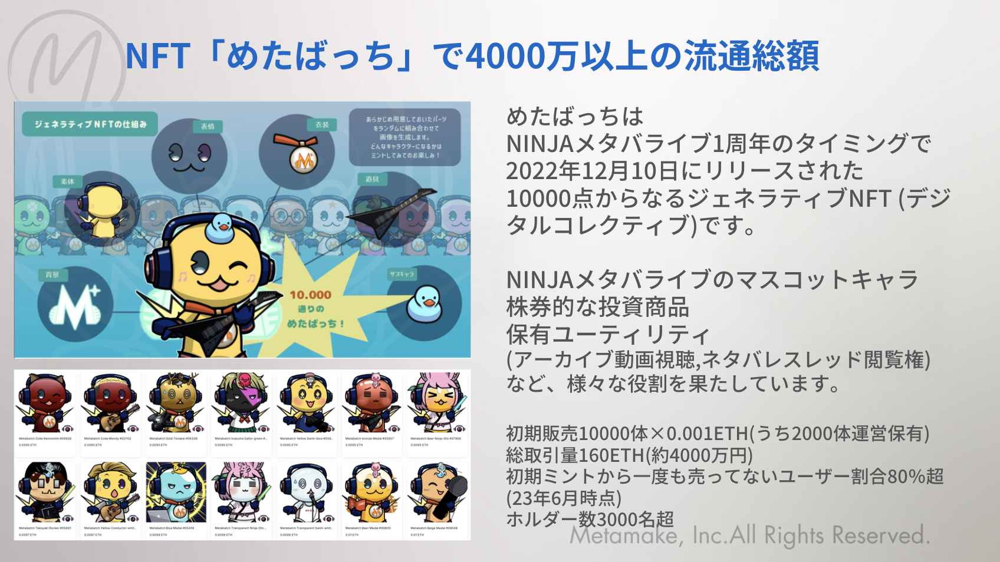
ただ、NFTバブルは弾けました。
正直、かなりお先真っ暗でした。
今は車中泊をしながら、
AI研修の講師と、
業務委託の飛び込み営業をやっています。
車で長野県を移動しながら働く日も多いです。
でも、車を運転していると、
当然ですがPC操作はなかなかできません。
- メールを返す。
- 管理画面を開く。
- 投稿作業をする。
- ファイルを整理する。
こういう作業を、全部自分の手でやっていたら回らないんですよね。
だから、
「できるだけAIに任せたい」
「ブラウザ操作を自動化したい」
と本気で思うようになりました。
この教材には、そのノウハウと試行錯誤の過程を、
できるだけ全部詰め込みたいと思っています。
きれいな成功談というより、
非エンジニアがAIに聞きながら、
どうやって自分の作業を減らしていったかの記録です。
ChatGPTかClaudeに3000円払うと世界が変わる
使うのは、CodexかClaude Codeです。
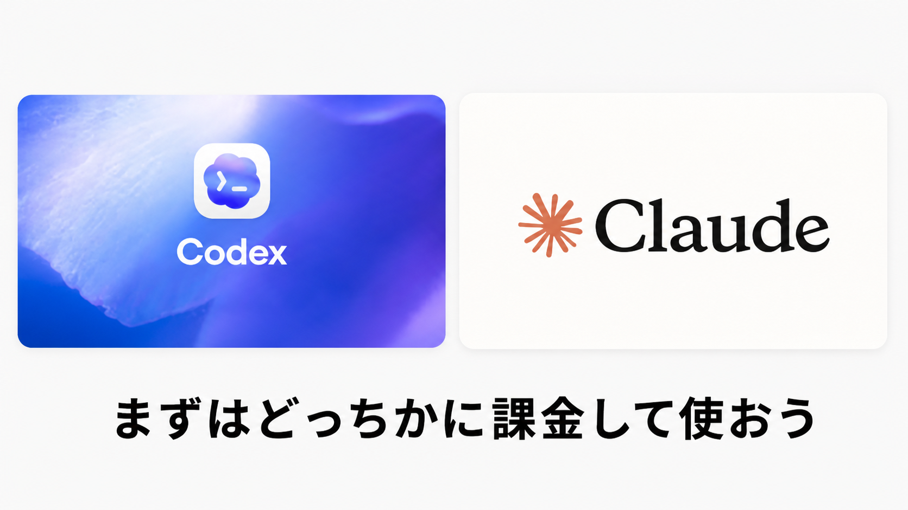
どちらを使っても大丈夫です。
Codex は ChatGPT に、
Claude Code は Claude に課金をしていれば使うことができます。
Codexは、ざっくり言うと「ChatGPT側のClaude Codeみたいなもの」です。
もしすでにどちらかのツールに課金をしているなら、
それを使ってください。
まだどちらのツールにも課金していない人は、
思い切って月3,000円の飲み会代を我慢して、
まずは1ヶ月だけ課金してみましょう。
どちらも、AIにコードを書いてもらったり、ファイルを直してもらったりしながら進めるための道具だと思ってください。
※ この教材の後半では、説明の流れ上「Claudeに聞く」「Claudeに渡す」と単体で書いている箇所もあります。Codexで進めている人は「Codexに聞く」「Codexに渡す」と読み替えて大丈夫です。
要するに、
CodexでもClaude Codeでも、やることの流れは同じ
だと思ってください。
※ 使い方によっては、月額プランとは別にAPI利用料や従量課金が発生する場合があります。特に、エージェント機能、APIキー、外部サービス連携を使う場合は、料金画面や上限設定を必ず確認してください。最初は小さい作業で試し、いきなり長時間・大量の処理を回さないほうが安全です。
この教材を通して持って帰ってほしいもの
ここで持って帰ってほしいものは、3つです。

1つ目：自分の業務を1個、自動化する手順
あなた自身の「あの作業」を、ボタン1つに近づけるところまで持っていきます。
2つ目：次の自動化を作るための考え方
メール、請求書、フォーム入力、管理画面、SNS投稿。
毎回同じ流れがある作業は、候補になります。
3つ目：詰まったときに戻れる地図
自動化作業は、多くの場合、1回では完結せず、途中で止まって詰まることがあります。
ただ、この教材を読むことで
- 詰まっても諦めないマインド
- 詰まった時に具体的にどんなプロンプトを与えると詰まりが解消しやすいか
- どこからやり直せばいいか、そしてやり直すために、どのような切り分けでAIに作業をさせればよいか
が身につきます。
こういう人に読んでほしい

この教材は、プログラミングを勉強したい人向けの教材ではありません。
向いているのは、
- 毎日または毎週、同じブラウザ作業をしている人。
- メール、スプレッドシート、管理画面、予約サイト、投稿サイトをよく使う人。
- 「自分でやったほうが早い」と思いながら、ずっと同じ作業を続けている人。
こういう人に手に取っていただきたいなと思っています。
必要なのは、最初から完璧に理解することではありません。
まずは月額のAIツールに課金して、
1つ小さな作業を選んで、
画面録画を見せながら頼んでみることです。
この教材で大事にしていること
AIで自動化を作るとき、実はやることは3段階に分かれています。
- 何を作りたいか、目的を決めること
- どういう風に作るか、「設計の手順」を描くこと
- 実際に実装すること
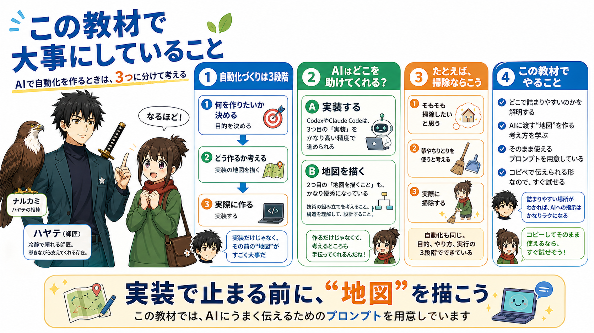
たとえば、掃除をしたいと考えたとき。
- そもそも「掃除をしたい」と考えること
- 「箒やちりとりを使う」と考えること
- 実際に掃除の作業をすること
という3段階と同じ構造です。
最近では、CodexやClaude CodeのようなAIエージェントが、
3つ目の「実装」をかなりの精度でやってくれるようになりました。
2つ目の「手順を描くこと」に関しても、非常に優秀になってはいますが、
作るものによっては、人間が思った通りの設計にはならないこともしばしばあります。
特にブラウザ操作自動化の現場では、
人間が操作する感覚とAIが操作する感覚にはギャップがあることが多く、
「手順の不一致」によって、実装段階で詰まってしまうことがまだまだあります。
そこでこの「ブラウザ操作自動化の教科書」では、
単純な操作手順の説明だけでなく、
詰まってしまったときにどんなマインドで、どんな方法論で乗り越えるかまでを含めて、
以下のような構成にしました。
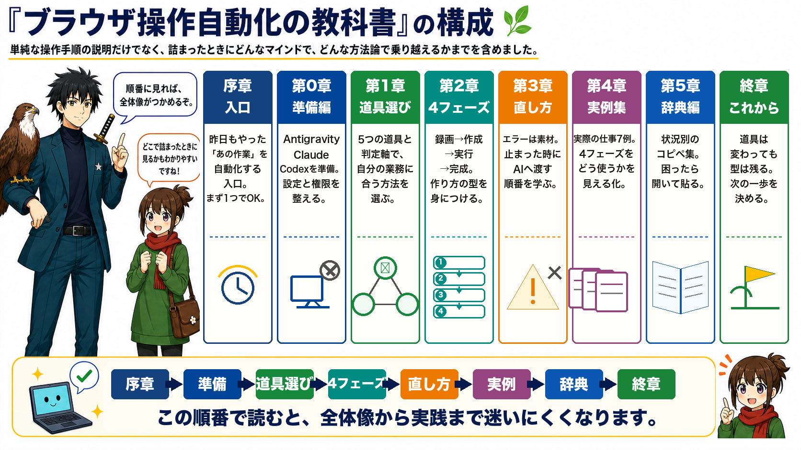
- 第0章 準備編
CodexまたはClaude Code、そしてPlaywrightのセットアップをします。道具を揃えるだけの章です。目安は1〜2時間。 - 第1章 知識編
3つの道具（Playwright MCP・Playwrightコード・Computer Use）の役割と使い分けを理解します。最初から全部使う必要はありません。 - 第2章 方法編
「録画→コード作成→デバッグ→回復設計」という4フェーズの型を学びます。この型に沿うだけで、完成までの道筋が見えるようになります。 - 第3章 マインド編
詰まっても折れないための心構えを先に持っておく章です。技術より先に読む価値があります。 - 第4章 詰まったときの抜け方
エラーが出たとき、何をどの順番でAIに渡すかを具体的に扱います。「また詰まった」ではなく「どう抜けるか」に変えるための章です。 - 第5章 辞典編
よくある詰まりパターンのコピペ用プロンプトをまとめた辞典です。専門用語がわからなくても、そのままAIに貼るだけで伝わる形にしてあります。 - 第6章 実例編
ペスハム自身が実際に作った自動化ツール2本を、制作過程ごと全公開します。「どこで詰まって、どう抜けたか」も含めて書いています。
まずは、1つだけでいい

あなたの仕事の中にある、
「毎回ちょっとめんどくさい、あの作業」
を1つだけ思い浮かべてください。
大きな業務じゃなくていいです。
- 請求書メールを探す。
- フォームに同じ情報を入れる。
- 投稿画面にタイトルと説明文を入れる。
そのくらいで十分です。
それを、CodexかClaude Codeと一緒に、
小さな自動化に変えていきます。
序章のまとめ
この序章でお伝えしたかったことを、3つにまとめます。
- 自分の業務を1個、自動化する手順を知る：「あの作業」を選んで、録画して、AIに見せて、コードにしてもらう。この流れを一度体験することが最初のゴールです。
- 次の自動化を作るための考え方を持つ：メール・フォーム入力・管理画面・SNS投稿。毎回同じ流れがある作業は、すべて候補になります。
- 詰まったときに戻れる地図を手に入れる：止まることは失敗じゃないです。エラーや画面をAIに渡せば、ほぼ必ず次の手が出てきます。この教材はその地図になるように書きました。

では、第0章で、まず道具を揃えていきましょう。
ここから先では、実際に道具を揃え、AIにブラウザ操作を見せ、コードにして、止まったら直し、もう一度動かすところまで進めます。
自動化は、読むだけでは身につきません。
まずはあなたの仕事の中にある「昨日もやったあの作業」を1つ選んでください。
この教材では、その1つをボタン1つに近づけるところまで、一緒に進めていきます。
この章に出てくる用語
- 自動化：決まった手順を、プログラムに代わりにやってもらうこと。毎日の繰り返し作業が対象になる
- ブラウザ操作自動化：ChromeなどのWebブラウザ上の作業（クリック・入力・データ取得）をコードで行うこと
- スクリプト：自動化の手順を記述したプログラムのファイル。AIに作ってもらい、Pythonで動かす
- Claude / Codex：コードを書いてもらったり、エラーを直してもらったりするAIの相談相手。この教材の中心的な道具
第0章 準備編：道具を揃える
最初の15分でやるミニ課題 ─ まずは1回、AIにブラウザを動かしてもらおう
この章を読み進めながら、並行してこのミニ課題を試してみてください。
「なんとなくわかった気がする」と「1回やった」は、まったく別物です。
小さく手を動かすだけで、ここから先の説明の入り方がまったく変わります。
※ CodexやClaude Codeなどの使い方はこの下で説明するので、まだよくわからない場合はそちらを読んでから試してください。
ミニ課題の内容
やることはこれだけです。
- Googleを開く。
- 任意のキーワードで検索する。
- 検索結果のタイトルを3つ抜き出す。
- テキストファイル（メモ）に保存する。
コードは一切書かなくていいです。AIに頼むだけです。
AIへの渡し方（コピペOK）
CodexかClaude Codeを開いて、以下をそのまま貼り付けてください。
キーワードだけ、自分が気になるものに変えてください。
※ キーワードは何でも大丈夫です。「副業 在宅 初心者」「ポッドキャスト おすすめ」など、自分が検索しそうな言葉に変えてみましょう。
うまく動いたら・動かなかったら
うまく動いた場合：
「results.txt」が作られ、タイトルが3行書かれているはずです。
これが、ブラウザ自動化の最小単位です。
途中で止まった場合：
エラーメッセージや止まった画面を、そのままAIに渡してください。
「これが出ました。続けてください」それだけでOKです。
詰まること自体は失敗ではありません。
AIに渡す材料が出てきた、というだけです。
環境構築、構えなくていい
「環境構築」いかにも面倒な言葉ですよね...
この準備のところが一番面倒くさいと思います。自分もここで一回気持ちが止まるタイプです。ですが、始めてみるとやることは意外とシンプルです。
この章でやることは、実質2つだけです。
- CodexかClaude Code、どちらかのAI開発ツールを使える状態にすること。
- Pythonという「自動化コードを動かすための土台」と、Playwrightという「ブラウザを自動操作するためのツール」を入れること。その流れで、ChromiumというPlaywright用のブラウザも一緒に入れます。
以上です。
ただ、「インストールが苦手」という人も多いと思うので、
画面のスクリーンショット付きで、できるだけ迷わないように進めます。
途中でわからなくなったら、
画面をスクショして、CodexかClaude Codeに聞いてください。
ここで全部理解しようとしなくて大丈夫です。
まずは、
「必要なものを入れる」
ところまで行ければOKです。
必要な道具は2つだけ
まず大事な道具を紹介します。2つだけです。
1つ目は、CodexかClaude Codeです。
これは、今回の自動化でいちばんよく使う相談相手です。
CodexはChatGPT側のコード作業ツール。
Claude CodeはClaude側のコード作業ツール。
まずはこのくらいの理解で大丈夫です。
- CodexかClaude Codeに相談する。
- コードを書いてもらう。
- ファイルを作ってもらう。
- エラーが出たら直してもらう。
- ブラウザ操作まで任せる。
このあたりをやってもらう中心になるのが、CodexかClaude Codeです。

ここで大事なのは、
「どっちが絶対に上です」と決めつけないことです。
AIツールの世界は、日々トレンドが入れ替わります。
- 今月はClaude Codeが強く見える。
- 来月はCodexが一気に良くなる。
- またその次は、別の機能でClaude Codeが便利になる。
こういうことが普通に起きます。
どちらも競い合って、毎月のように進化しています。
そのため、1つのツールに定額で課金することは、いくら見た目の金額がお得に見えてもお勧めしません。
月額単位で課金して、いつでもやめられる、乗り換えられるという体制にしておくことがおすすめです。
なので、この教材では、
CodexかClaude Codeのどちらかを使えばOK
という前提で進めます。
ただ、教材執筆時点、
2026年5月時点では、
個人的にはCodexが一歩リードしていると感じています。
なので、
これから新しく始める非エンジニアの人は、
まずCodexから試すのがおすすめです。
すでにClaudeに課金している人は、
Claude Codeから始めても大丈夫です。
まずはChatGPTかClaude、どちらかに課金して、
「AIに作業を任せる感覚」
を体験してみてほしいです。
月3,000円くらいの課金って、最初はちょっと引っかかると思います。
でも、これは娯楽のサブスクというより、
自分の時間を増やすための道具代だと思ったほうが近いです。
毎日30分の作業が1つ減ったら、
1ヶ月で約15時間です。
15時間を3,000円で買えるなら、
かなり安いと思いませんか？
しかも、合わなければ1ヶ月でやめればいいです。
まず1ヶ月だけ試す。
そこで1個、自分の作業を自動化してみる。
それくらいの軽さで始めて大丈夫です。
※ この教材の後半では、説明の都合上「Claudeに聞く」「Claudeに渡す」と書いている箇所があります。Codexで進めている人は「Codexに聞く」「Codexに渡す」と読み替えて大丈夫です。
大事なのはツール名ではなく、
AIに状況を渡して、コードを書いてもらい、エラーを一緒に直していくこと
です。
2つ目は、Python + Playwrightです。
いきなり知らない言葉が出てきましたが、ここでは名前だけ覚えれば大丈夫です。
Pythonは、自動化コードを動かすための土台。
Playwrightは、ブラウザを実際に操作するための自動化ツールです。

CodexかClaude Codeが考えて、
Pythonで書かれたコードを動かし、
Playwrightがブラウザを操作する。
ざっくり言うと、こういう役割分担だと思ってください。
PythonもPlaywrightも無料で使えます。
Playwrightとは？
ここで少しだけ、Playwright自体の説明もしておきます。
Playwright（プレイライト）は、
Microsoftが2020年1月に公開した、
オープンソースのブラウザテスト自動化ツールです。
もともとは、
WebサイトやWebアプリがちゃんと動くかを自動で確認するための道具です。
でも、やっていることは、
人間がブラウザでやっている操作にかなり近いです。
- ページを開く。
- ボタンを押す。
- 入力欄に文字を入れる。
- ファイルをアップロードする。
- 画面が変わったか確認する。
こういう操作を、コードで再現できます。
Playwrightの大きな特徴が、
Auto-wait（自動待機）です。
これは、
ボタンや入力欄が操作できる状態になるまで、
Playwright側が自動で待ってくれる機能です。
人間でもありますよね。
ページを開いた直後に、
急いで「次へ」を押したら、
「あれ？反応しない」
となる。
そこで何度も連打しているうちに、
なぜか画面が変な状態になったり、
エラーになったりする。
これ、普通にありますよね。
こういうタイミングのズレは、
自動化でもかなり起きます。
Playwrightは、そのズレを減らすために、
「要素が表示されたか」
「クリックできる状態か」
「入力できる状態か」
を見ながら進めてくれます。
専門用語では、
タイミング問題で不安定になるテストを
Flaky Test（フレーキーテスト）と言います。
毎回同じコードなのに、
ある日は成功して、
ある日は失敗する。
こういう不安定さを減らせるのが、
Playwrightのかなり強いところです。
だから、ブラウザ操作の自動化には向いています。
Claude Codeで進める人は、Claudeアプリの中にClaude Codeがあります。
Codexで進める人は、Codexアプリ側で同じようにコード作成・実行・修正を進めます。
このあと、Claude向けの説明とCodex向けの説明が出てきますが、
最終的にはどちらも同じ「AIに自動化を作ってもらう設定」として合体して考えてください。
別々の流派がある、というより、
入口がCodexかClaude Codeかで少し画面や言い方が違うだけです。
- 個人設定を入れる。
- Playwright MCPをつなぐ。
- ブラウザを操作できるようにする。
- エラーが出たらスクショとログを渡す。
この基本は同じです。
「プログラミング用のツールをたくさん揃えないといけないのかな」
と思っていた人もいると思います。
でも、最初からあれこれ入れなくて大丈夫です。
Claudeアプリとは何か
ℹ️ ここからは Claude（Claude Code）を使う人向け の解説です。Codex（ChatGPT）を使う人は、こちらのCodexセクションへ。
「Claude」って、ブラウザとアプリで2種類あってちょっとわかりにくいんですよね。先に整理しておきます。
1つ目は、ブラウザ版Claudeです。
これは、claude.aiをブラウザで開いて使うClaudeです。
- 会話をする。
- 文章を作る。
- アイデアを出してもらう。
- コードの相談をする。
こういう用途なら、十分すぎるくらい便利ですよ。
ただし、ブラウザ版Claudeは、基本的にあなたのパソコンの中のファイルを直接操作できません。
コードを書いてもらうことはできます。
でも、そのコードをあなたのパソコン上で実行したり、ファイルを作ったり、ブラウザを自動で動かしたりするところまではできません。
2つ目が、Claudeデスクトップアプリです。
これは、パソコンにインストールして使うClaudeです。
今回使うのはこちらです。
Claudeアプリでは、Claude Codeを使えます。
- コードを書く。
- ファイルを作る。
- コマンドを実行する。
- エラーを見て修正する。
- ブラウザを操作する。
こういう「実際に手を動かす作業」まで任せられます。
ブラウザ版のClaudeは、「相談には乗ってくれるけど、手元の作業まではしない」状態です。
「こういうコードを書いて」と伝えることはできますが、自分では何も動かしません。
でも、Claudeアプリを入れると変わります。
Claudeが、かなり実作業に近いところまで触れるようになります。
コードを書くだけでなく、自分で実行して、エラーが出たら自分で直して、ファイルを作って、ブラウザを開いて操作することもできます。
自動化ツール作りでは、ここがかなり大事なんですよね。
手順① Claudeアプリをインストール
ここが第一関門です。
とはいえ、やること自体は普通のアプリインストールとほぼ同じです。
画面が少し違っても焦らなくて大丈夫なので、
近いボタンを探しながら進めてください。
Step 1 Claude.aiにアクセスする
Googleで「claude」と検索します。

一番上に出てくる「Claude（claude.ai）」をクリックします。
トップページが表示されます。

Step 2 アカウントを作成する
「メールで続ける」を押すと、登録したアドレスにメールが届きます。

届いたメールの「Claude.aiにサインイン」を押すと、PCの画面で次に進みます。
名前を入れて、規約に同意してください。

その後、プロフィールを聞かれますが、飛ばしてOKです。

Step 3 有料プランに加入する
自動化のためには、有料プランへの加入が必須です。
「月20ドル、高くない？」と思いましたか？
正直、最初はちょっと高く感じると思います。
自分も、サブスクが増える感じは普通に嫌です。
ただ、自動化ツール作りでは、
有料プラン（月3,000円前後）を前提にしたほうが進めやすいです。
無料プランだと、
コードを作って、エラーを直して、また作って、
という途中で制限に引っかかりやすいからです。
まず1ヶ月だけ試して、
合わなければ解約する。
このくらいの軽さで大丈夫です。
課金の考え方は、ChatGPTでCodexを使う場合も同じです。

「Claudeを体験する」からProプランを選択します。

クレジットカード情報を入力して購入します。

Step 4 デスクトップアプリをダウンロードする
加入が終わったら、左下のアイコンから
「アプリと拡張機能を入手」をクリックします。

「macOS版をダウンロード」を押すとアプリがダウンロードされます。

💻 Windowsをお使いの方へ
Windowsの場合も同様のプロセスでダウンロードおよびインストールを行ってください。画面の表示はMacと多少異なりますが、手順の流れは同じです。
ダウンロードしたファイルを開いて、Claudeアプリを「アプリケーション」フォルダにドラッグします。

Step 5 Claudeアプリを起動する
起動すると、こんな画面になります。

これでインストール完了です。
補足：Claudeアプリの3つのモード
左上に3つのアイコンがあります。覚えておくと便利です。
① Chat（チャット）モード
普通の会話モード。文章生成や相談はここです。
② Cowork（コワーク）モード

メール処理・スケジュール管理など、自律的にタスクをこなしてもらうモードです。
今回の自動化ツール作りでは使いません。
③ Code（コード）モード

これが本命です。Claude Codeのモード。
コードを書く・実行する・修正するをすべてやってくれます。
自動化ツール作りは、このCodeモードで進めます。
✅ チェックポイント
- Claudeアプリがインストールされている
- Proプランに加入している
- Codeモードが表示される
🚨 詰まったとき
アプリがまだ入っていない場合は、ブラウザで claude.ai を開いてください。
以下のテンプレートをそのまま貼り付けて聞けば、解決策を教えてくれます。
ClaudeアプリをMacにインストールしようとしましたが、
[ここに症状を記入]という状態になります。
▼ 環境
macOS [バージョン]
解決方法を教えてください。
[スクリーンショットを添付]次は「個人設定（カスタマイズ）」を入れましょう。
Codexで進める人はこちら
💡 Claude Codeで進める人は、このパートを読み飛ばして大丈夫です。
次の「個人設定」に進んでください。
ここまでClaudeアプリの説明をしました。
一方で、
ChatGPT側のCodexで進めたい人は、
ここでCodexの初期設定をしておきます。
Codexは、ざっくり言うと
「ChatGPT側のClaude Codeみたいなもの」です。
- コードを書く。
- ファイルを直す。
- エラーを見て修正する。
- ブラウザを確認する。
- 必要ならコマンドを実行する。
こういう作業を任せられます。
ただし、できることが多いぶん、
最初の設定は少し慎重にしたほうがいいです。
Codexアプリを使います
この教材では、Codexアプリを使って進めます。
チャット画面でやりとりしながら、
コードを作ったり、直したり、ブラウザで確認したりできます。
Claude Codeと同じ感覚で使えます。
Codexには他の使い方もありますが、
この教材ではCodexアプリだけを使います。
他の入口は気にしなくて大丈夫です。
Codexアプリの開き方
ChatGPTアプリを開くと、左のサイドバーに「Codex」があります。

クリックするとCodexのメイン画面が開きます。

画面上部に「Codexアプリ」「ターミナルで試す」「自分のIDEで試す」と3つ表示されますが、
「Codexアプリ」だけを使います。他は無視してください。
「Codexアプリ」をクリックすると、ダウンロード画面が開きます。

Codexアプリで最初にやること
Codexで進める人は、最初にこの順番で設定してください。
1. ChatGPT / OpenAIアカウントでログインする
2. Codexアプリを開く
3. 作業フォルダを決める
4. フルアクセスをOFFにする
5. 書き込み範囲を作業フォルダだけにする
6. 必要になってからMCPやブラウザ機能を追加する最初から、
メール、Drive、Notion、ブラウザ操作、コンピュータ使用を
全部つなぐ必要はありません。
まずは、
テスト用フォルダや、
自動化プロジェクト専用フォルダだけで試してください。
初心者におすすめのCodex設定
この教材の読者は、
基本的に「日常業務向け」の設定で始めてください。
フルアクセス：OFF
自動レビュー：基本OFF。自動化コードを作るときだけON
承認ポリシー：書き込み・送信・削除は必ず確認
サンドボックス：作業フォルダだけ書き込みOK
ネットワーク：必要なサイトだけ許可
MCP：最初は読み取り中心
ブラウザ操作：確認しながら使う
コンピュータ使用：最後の手段ここで大事なのは、
Codexに何でも任せないことです。
- 調べる。
- 整理する。
- 下書きする。
- 手順を作る。
- 自動化コードのたたき台を作る。
最初はここまでで十分です。
メール送信、
SNS投稿、
ファイル削除、
購入、
公開、
顧客データの更新は、
人間が確認してから実行します。
Codexで詰まったとき
画面や設定名はアップデートで変わることがあります。
見つからない項目があれば、
Codexにこう聞いてください。
Codexで日常業務のブラウザ自動化を作りたいです。
非エンジニアなので、安全寄りの初期設定にしたいです。
以下の条件で、今の画面を見ながら設定手順を教えてください。
・フルアクセスはOFF
・書き込み範囲は作業フォルダだけ
・送信、削除、公開は必ず確認
・MCPやブラウザ操作は必要になってから追加
[今の画面のスクリーンショットを貼る]Claude Codeで進める人は、
このCodexパートは読み飛ばして大丈夫です。
手順1.5 個人設定（カスタマイズ）を入れる
続いて、個人設定を入れます。「個人設定、そんなに大事？」と思うかもしれません。
地味なんですけど、けっこう大事です。
ここを飛ばすと、Claude CodeやCodexとのやり取りが毎回ゼロからになります。
Claude CodeもCodexも、初期状態だと「あなたが誰なのか」を全く知りません。
「自分の仕事はこれで」「こういう書き方が好みで」「専門用語は使わないでほしい」
これを毎回説明するの、普通に面倒なんですよね。
最初に1回だけ自己紹介を登録しておくと、毎回の会話でAIが配慮してくれるようになります。
Claude Codeで進める人の個人設定
Claudeアプリの左下のアイコン → 「Customize」をクリックします。
「Personal preferences」または「カスタム指示」の入力欄に、自分の情報を貼り付けます。
自分の個人設定を作るプロンプト（コピペOK）
「何を書けばいいかわからない」という人がほとんどだと思います。
なので、Claudeに自分の個人設定を作らせるプロンプトを用意しました。
新規チャットでこれを貼り付けてください。
あなたに、私のClaudeアプリのカスタム指示（Personal preferences）に
登録するための文章を作ってもらいたいです。
これから私の情報を伝えるので、それをもとに
今後Claudeとやり取りする際に「私のことを理解した状態で答えてくれる」
ような自己紹介テキストをMarkdown形式で作ってください。
▼ 私の情報
・名前：[ここに自分の名前]
・職業：[例：会社員 / 経営者 / フリーランス / 主婦 など]
・専門分野や得意なこと：[例：マーケティング / デザイン / 音声配信 など]
・現在やっている主な作業：[例：毎日のSNS投稿 / メール返信 / 顧客対応 など]
・自動化したいと思っている業務：[例：予約サイトへの入力 / メール下書き など]
・パソコンスキル：[例：プログラミング未経験 / Excelは普通に使える など]
・コミュニケーションの好み：[例：丁寧に説明してほしい / 短く要点だけ など]
・避けてほしい表現：[例：専門用語の連発 / 過度に堅い文章 など]
▼ お願い
上記をベースに、Claudeが「ユーザーをよく理解している前提」で
動けるカスタム指示文を、500〜1000文字程度で作ってください。
コピペしてそのまま使える形でお願いします。これを使うと、Claudeが「あなた専用の自己紹介文」っぽいものを作ってくれます。
それをCustomize欄にコピペするだけです。
それ以降、Claudeは：
- 専門用語を避けて説明してくれる
- あなたの業務文脈を踏まえた提案をくれる
- 文章のトーンをあなたの好みに合わせてくれる
毎回イチから説明する手間が、かなり減ると思います。
Codexで進める人向けの個人設定プロンプト
Codexで進める人も、考え方は同じです。
Codexにも、
「自分は何者で」
「何を自動化したくて」
「どういう説明が合うのか」
を最初に渡しておくと、かなり進めやすくなります。
Claudeだけ丁寧に設定して、Codexは雑に始めるのは、ちょっともったいないです。
Codexで進める人は、新しいチャットでこれを貼ってください。
あなたに、私のCodexのカスタム指示に登録するための文章を作ってもらいたいです。
これから私の情報を伝えるので、それをもとに
今後Codexとやり取りする際に「私のことを理解した状態で答えてくれる」
ような自己紹介テキストをMarkdown形式で作ってください。
▼ 私の情報
・名前：[ここに自分の名前]
・職業：[例：会社員 / 経営者 / フリーランス / 主婦 など]
・専門分野や得意なこと：[例：マーケティング / デザイン / 音声配信 など]
・現在やっている主な作業：[例：毎日のSNS投稿 / メール返信 / 顧客対応 など]
・自動化したいと思っている業務：[例：予約サイトへの入力 / メール下書き など]
・パソコンスキル：[例：プログラミング未経験 / Excelは普通に使える など]
・コミュニケーションの好み：[例：丁寧に説明してほしい / 短く要点だけ など]
・避けてほしい表現：[例：専門用語の連発 / 過度に堅い文章 など]
▼ Codexに守ってほしいこと
・私は非エンジニアなので、説明は日本語でお願いします
・専門用語を使う場合は、短く意味も補足してください
・勝手にファイル削除、送信、公開、購入、確定、外部サービスへの反映をしないでください
・作業前に、何をするかを短く説明してください
・作業後に、どこを変更したか、何を確認したかを教えてください
・ブラウザ自動化では、座標クリックよりも、画面上の文言、ラベル、ボタンの役割、URL変化、完了メッセージを優先してください
・エラーが出たら、スクリーンショット、ログ、URL、今いる画面の状態を残す方針にしてください
▼ お願い
上記をベースに、Codexが「ユーザーをよく理解している前提」で
日常業務の自動化を安全に手伝えるカスタム指示文を、500〜1000文字程度で作ってください。
コピペしてそのまま使える形でお願いします。これで出てきた文章を、Codexのカスタム指示に貼ります。
手順② Playwright MCPを繋ぐ
Playwright MCPを接続すると、
CodexやClaude Codeが実際のブラウザを直接操作できるようになります。
「え、AIがブラウザを操作するの？」
そうです。ここ、最初ちょっと不思議な感じがすると思います。
AIアプリから、ブラウザ操作を手伝ってもらえるようになります。
- 「このページを開いて」
- 「このボタンを押して」
- 「このフォームに入力して」
これを、日本語で指示するだけでAIが実行してくれるようになります。
基本は、自分でコマンドを打たなくても大丈夫です。
まずはCodexかClaude Codeに、こう頼んでください。
Playwright MCPを繋いでください。
ブラウザを操作できる状態にして、
最後にGoogleを開けるか確認してください。これで設定してくれるなら、それでOKです。
もしうまくいかない場合だけ、ターミナル（PowerShell）にコマンドを入力します。
（Windowsの場合はコマンドプロンプトかPowerShellと言います。だいたいPowerShellを使っておけば問題ありません）
ターミナル（PowerShell）は、
パソコンに文章で命令を出すためのアプリです。
黒い画面に英語を打つ、あれです。
怖く見えると思いますが、
ここでやることは「指定された文字を貼り付けてEnterを押す」だけです。
Claude Codeで進める場合はこちらです。
claude mcp add playwright npx @playwright/mcp@latestCodexで進める場合はこちらです。
codex mcp add playwright -- npx @playwright/mcp@latestコマンドを打つのが怖い、という方は、
この文をそのままコピーして、ターミナル（PowerShell）に貼り付けてEnterを押すだけでOKです。
✅ 確認方法
設定後、CodexかClaude Codeに「Googleを開いて」と頼んでブラウザが開けば成功です。
🚨 詰まったとき
CodexかClaude Codeに以下をそのまま貼り付けて聞いてください。
実行したコマンドとスクリーンショットを添えるだけで、原因を特定して次の手順を教えてくれます。
Playwright MCPを接続しましたが、CodexかClaude Codeに「ブラウザを開いて」
と頼んでも反応しません。
▼ 実行したコマンド
[ここに実行したコマンドを貼る]
▼ 現在の状況
[ここに症状を記入]
[スクリーンショットを添付]手順③ 自動化に必要な3つの道具を入れる
毎日繰り返す作業を「ボタン1つで動かせるロボット」にするために必要です。
ここでは、3つのものを入れます。
いきなり全部まとめて言うとわかりにくいので、
1つずつ説明します。
1つ目：Python
Pythonは、
自動化コードを動かすための土台です。
ここでは、Pythonの文法を勉強する必要はありません。
CodexやClaude Codeが作ってくれた自動化コードを、
パソコンの中で動かすために入れるものです。
2つ目：Playwright
Playwrightは、
ブラウザを自動で操作するためのツールです。
- ページを開く。
- ボタンを押す。
- 文字を入力する。
- ファイルをアップロードする。
- 保存されたか確認する。
こういうブラウザ操作を、
コードから実行できるようにしてくれます。
3つ目：Chromium
Chromium（クロミウム）は、
Playwrightが操作するためのブラウザです。
普段使っているGoogle Chromeとは少し別物です。
「Chromeをもう入れてるのに、なんでまたブラウザを入れるの？」
と思うかもしれませんが、
これは自動化用のブラウザを別で準備しているだけです。
あなたがいつも使っているChromeを勝手にぐちゃぐちゃ触るのではなく、
自動化用のブラウザを用意して、
そこでログインやクリック、入力のテストをします。
まずはAIに入れてもらう
最初から自分でコマンドを打たなくて大丈夫です。
Claude CodeでもCodexでも、
チャット欄にこう頼んでください。
Pythonを入れてください。
Playwrightを入れてください。
Chromiumを入れてください。
最後に、全部入ったか確認してください。
私は非エンジニアなので、途中で必要な操作があれば1つずつ説明してください。これで進めてくれるなら、それでOKです。
ここでうまくいかなかった人だけ、
次のターミナル（PowerShell）操作に進んでください。
手動でのインストール方法（Mac / Windows）
AIに任せてうまくいかなかった場合、手動でコマンドを実行します。
表示された文字を1行ずつコピーして、ターミナル（PowerShell）に貼り付けてEnterを押す。それだけです。
🍎 Macの場合
アプリ一覧から「ターミナル（PowerShell）」と検索して開いてください。
Claude Codeで進める人はClaudeアプリのターミナル（PowerShell）でも大丈夫です。
以下を1行ずつ実行してください。
brew install python@3.11
pip3.11 install playwright
playwright install chromium💡 brew が入っていない場合
「command not found: brew」と出たら、まず以下を実行してください。/bin/bash -c "$(curl -fsSL https://raw.githubusercontent.com/Homebrew/install/HEAD/install.sh)"
💻 Windowsの場合
スタートメニューから「コマンドプロンプト」または「PowerShell」を開いてください。
まず、python.org からPythonをダウンロードしてインストールしてください。
インストール時に「Add Python to PATH」にチェックを入れるのが重要です。
インストール後、以下を1行ずつ実行してください。
pip install playwright
playwright install chromium💻 Windowsで「pip が認識されない」場合python -m pip install playwright のように頭に python -m をつけて試してください。それでも解決しない場合は、エラー文をそのままCodexかClaude Codeに貼り付けて聞いてください。
✅ 確認方法
CodexかClaude Codeのチャット欄でこう頼んでください。
Pythonのバージョンを確認してください。「ターミナル（PowerShell）で確認して」と言われた場合は、python3.11 --version をコピペして打ってください。
バージョン番号（「Python 3.11.x」のような文字）が表示されればOKです。
🚨 詰まったとき
エラーが出ても焦らないでください。
CodexかClaude Codeに、以下のテンプレートをそのまま貼って聞いてください。
エラー文とスクリーンショットさえ添付すれば、ほぼ解決してくれます。
Pythonという自動化コードを動かすための土台と、Playwrightというブラウザ自動化ツールをインストールしようとしましたが、
以下のエラーが出ます：
[エラー文をそのままコピペ]
▼ 環境
macOS [バージョン]
Homebrewは [入っている / 入っていない]
[スクリーンショットを添付]Codex / Claude Codeを使いこなす3つのコツ
準備が終わったところで、使い始める前に3つだけ頭に入れておいてください。
これを知らずに始めると、あとでちょっと遠回りしがちです。
コツ1：いきなり「作って」と言わない
最初にやりがちなミスです。
＜悪い例＞
「Stand.fmの自動アップロードツールを作って」
＜良い例＞
Stand.fmの自動アップロードツールを作りたいです。
まず設計だけ教えてください。
コードはまだ書かなくていいです。「作って」と一言で言うと、AIはいきなりコードを書き始めます。
でも、最初に「どんなものを作るか」の認識がずれていると、
あとから「なんか違うな」となって、やり直しになりがちです。
計画を確認してからGOを出すだけで、この無駄はかなり減ります。
コツ2：「自分で確認してから報告して」と伝える
「コードを書いたら実際に実行して、
正しく動くか確認してください。
エラーが出たら自分で修正してから教えてください。」これを最初に言っておくと、CodexやClaude Codeが自分でテストして、自分で直すところまでやってくれやすくなります。
毎回「動いた？」「まだエラー？」と人間が確認し続けるの、けっこう疲れるんですよね。
なので、最初からそう頼んでおきます。
コツ3：詰まったらスクショを貼る
言葉で説明しようとすると、うまく伝わらないことがよくあります。
そういうときは、今の画面をそのままスクリーンショットで貼ってください。
「ここをクリックしたら止まりました」「この画面から進めません」
それだけで、AIはかなり状況を把握できます。
エラー文が出ていればそれも一緒に貼ると、より的確に対応してもらえます。
第0章 チェックリスト
全部揃えたら、第1章へ進んでください。
□ ClaudeアプリまたはCodexアプリ 準備完了
□ ChatGPTまたはClaudeの有料プラン 加入完了
□ 個人設定（Customize） 登録完了
□ Playwright MCP 接続完了
□ Python インストール完了
□ Playwright インストール完了
□ Chromium インストール完了ここまでできたら、準備はかなり進んでいます。
次の章から、実際に自動化の仕組みを見ていきます。
この章に出てくる用語
- Codex：ChatGPT側のコード作業ツール。コードの生成・修正・実行・ブラウザ操作を担当する
- Claude Code：Claude側のコード作業ツール。Codexと同じ役割で、どちらか使いやすいほうを選ぶ
- Python：自動化コードを動かすためのプログラミング言語。インストールが必要だが、コードは全部AIに書いてもらう
- Playwright：PythonからブラウザをAI操作するためのライブラリ。クリック・入力・スクロールなどを自動化できる
- Chromium：PlaywrightがインストールするChromeベースのブラウザ。自動化専用に使う
第1章 知識編：自動化できる作業を見つける
この章でわかること
この章でわかるのは、次の3つです。
- Playwright MCPは何をする道具なのか。
- Playwrightコードは、なぜ毎日の繰り返し作業に向いているのか。
- Computer Useは、どんなときに使う最後の手段なのか。
ここを先に押さえておくと、
「今どの道具を使う場面か」が判断しやすくなります。
先に、何を自動化できるのか見ておきます
道具の話に入る前に、
先に「何を自動化できるのか」の見取り図を置いておきます。
ここが見えていないと、
Playwright MCPとか、
Playwrightコードとか、
Computer Useとか言われても、
「で、それを何に使うの？」
となりやすいからです。
ブラウザ操作の自動化で狙いやすいのは、
だいたいこのあたりです。
メール・請求書まわり
- メールの問い合わせメールを読み取って、スプレッドシートに転記する。
- 請求書メールだけを探して、会計フォルダに分ける。
- 添付されている請求書PDFをDriveに保存する。
- PDFから金額、日付、取引先を抜き出す。
- 入金済み、未入金をスプレッドシートで照合する。
請求書・予定・タスクまわり
- スプレッドシートに行が追加されたら、請求書を作る。
- Googleカレンダーの予定を見て、前日にリマインドを送る。
- 商談メモをNotionに保存する。
- 商談メモから次回タスクを拾って、Googleカレンダーに登録する。
- 未返信の見込み客だけをメールから抽出する。
問い合わせ対応・営業管理
- 自分の会社に届いた問い合わせメールを読み取り、会社名、担当者名、メールアドレス、問い合わせ内容を整理する。
- 返信が必要なもの、確認が必要なもの、対応済みのものに分ける。
- 商談メモや対応履歴を、自社のCRMやスプレッドシートに記録する。
- 対応済みの問い合わせはスキップする。
- エラーや判断に迷うものだけ、あとで人間が確認できるようにする。
🔔気をつけよう🔔
一方で、他社のお問い合わせフォームへ営業文面を自動送信する使い方は、
この教材では推奨しません。
特定電子メール法、各サイトの利用規約、迷惑行為としての受け止められ方など、
炎上やクレームにつながるリスクが高いからです。
ブラウザ自動化は便利ですが、
外部への大量送信や営業フォーム送信ツールとして使うのではなく、
自分の手元にある情報整理や、許可された範囲の定型作業に使ってください。

コンテンツ制作
- Googleドキュメントの原稿から、noteの下書きを作る。
- スプレッドシートに並べたX投稿案を、予約投稿ツールに登録する。
- 長文記事をX用に分割する。
- 音声配信の原稿を記事化する。
- YouTubeの概要欄を作る。
EC・予約サイトの管理画面
- 商品名、価格、在庫数、説明文を入力する。
- 配送条件を選ぶ。
- 公開ステータスを変更する。
- 予約枠や空き状況を更新する。
- 管理画面の一覧から、特定条件の商品や予約だけを探す。
全部をいきなり自動化する必要はありません。
まずは、
「毎回同じ画面を開いて、同じ項目を入力している作業」
を1つ見つけるだけで十分です。
では、この見取り図を持ったうえで、
道具の使い分けに入ります。
3つの道具、こう使い分ける

Playwright MCPは、Claudeにブラウザを直接操作してもらうための道具です。
- まず試す。
- 1回だけ操作する。
- この画面が自動化できそうか確認する。
Playwrightコードは、繰り返し用のロボットを作るための道具です。
- 毎日やる。
- 毎週やる。
- 案件ごとに何度もやる。
Computer Useは、Claudeが画面を見ながら人間のように操作する、最後の手段です。
- MCPやPlaywrightコードでうまく動かない。
- ボタンや入力欄が特殊で、普通のやり方では触れない。

3つはライバルではなく、役割が違うだけです。
最初はMCP。繰り返すならコード。どうしても動かないならComputer Use。
この順番で考えると、迷いにくいです。
最後の操作は、必ず人間が確認する

自動化で一番大事なのは、”動いた！”ではありません。
”止まったときに、どこで止まったかわかること”です。
AIがクリックできることより、
失敗したときに失敗したと気づけることのほうが大事です。
実際の業務画面には、送信・削除・請求・公開のような、
間違えると取り消せない操作があります。
- しかも失敗は、わかりやすいエラーだけではありません。
- ログインが切れていた。保存が完了していなかった。入力欄が1つ空のままだった。
- こういう小さいズレで「動いたように見えて、実は失敗している」ことがあります。
公開・送信・削除・請求のような操作は、最後は人間が確認してから進めます。
この設計にしておくと、現実の業務でも安全に使い続けられます。
① Playwright MCP Claudeにブラウザの「手」を渡す道具
まず1つ目が、Playwright MCPです。
名前は難しいですよね。
MCPは Model Context Protocol の略で、「AIが外部の道具を使えるようにするための接続ルール」みたいなものです。難しそうですが、「ClaudeとPlaywrightをつなぐ橋」くらいの理解で十分です。
でも、やっていることはそこまで難しくありません。
Claudeにブラウザ操作を手伝ってもらう。
これだけです。
普通のClaudeは、基本的に文章で答えるだけです。
「このボタンを押してください」
と言っても、Claude自身があなたのブラウザを押してくれるわけではありません。
でもPlaywright MCPをつなぐと、
Claudeがブラウザを開いて、
ページを見て、
ボタンを押して、
フォームに入力して、
画面の状態を確認できるようになります。
つまり、
Claudeが説明するだけではなく、
実際の画面を見ながら確認できるようになります。
ここがかなり大きいです。
MCPは、最初の試運転に向いています
MCPが特に便利なのは、
「この作業、自動化できそうかな？」
と試す段階です。
たとえば、あなたが毎日Stand.fmに音声をアップロードしているとします。
いきなり完成版のロボットを作ろうとすると、
ちょっと重いですよね。
- ログインはどうするのか。
- ファイル選択はできるのか。
- タイトル欄は入力できるのか。
- 予約日時は選べるのか。
- サムネイルは設定できるのか。
考えることが多いです。
でもMCPなら、まずClaudeにこう頼めます。
Stand.fmの投稿画面を開いて、
新規投稿の画面まで進めるか確認してください。
実際に投稿はしないでください。または、こうです。
この管理画面で、
音声ファイルをアップロードする欄がどこにあるか探してください。
まだ実行はせず、操作できそうかだけ確認してください。これなら、かなり始めやすいです。
いきなり本番投稿するわけではない。
いきなりコードを完成させるわけでもない。
- まず、Claudeに画面を見てもらう。
- 押せそうなボタンを探してもらう。
- 自動化できそうかを確認する。
この「下見」にMCPは向いています。
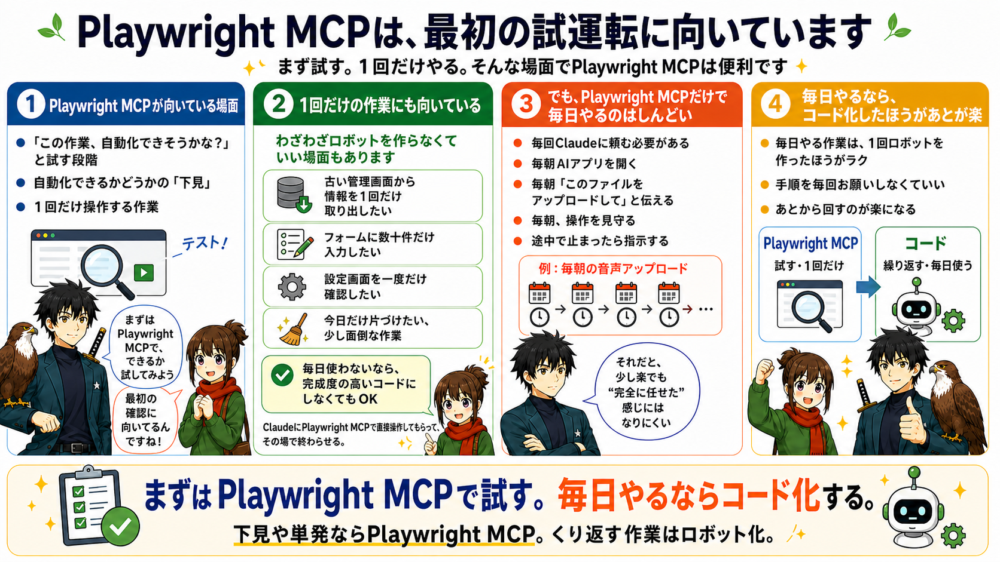
MCPは、1回だけの作業にも向いています
もう1つ、MCPが向いている場面があります。
それは、1回だけやればいい作業です。
たとえば、
- 古い管理画面から情報を1回だけ取り出したい。
- フォームに数十件だけ入力したい。
- 設定画面を一度だけ確認したい。
- 大量ではないけど、手でやると少し面倒な作業を今日だけ片づけたい。
こういう場合は、
わざわざロボットを作らなくてもいいことがあります。
毎日使わないなら、
完成度の高いコードにする必要はありません。
ClaudeにMCPで直接操作してもらって、
その場で終わらせる。
これで十分なことも多いと思います。
ただし、MCPだけで毎日やるのはしんどい
便利なMCPですが、
弱点もあります。
それは、
毎回CodexやClaude Codeに頼む必要があることです。
たとえば、毎朝の音声アップロードをMCPだけでやるとします。
- 毎朝AIアプリを開く。
- 毎朝「このファイルをアップロードして」と伝える。
- 毎朝、AIの操作を見守る。
- 毎朝、途中で止まったら指示する。
これだと、手作業よりは楽かもしれません。
でも、
「完全に任せた」
という感じにはなりにくいです。
毎日やるなら、
毎日Claudeにお願いするよりも、
1回ロボットを作ってしまったほうが、あとが楽だと思います。
そこで次の道具、
Playwrightコードが出てきます。
② Playwrightコード 繰り返し作業をロボットにする道具
2つ目が、Playwrightコードです。
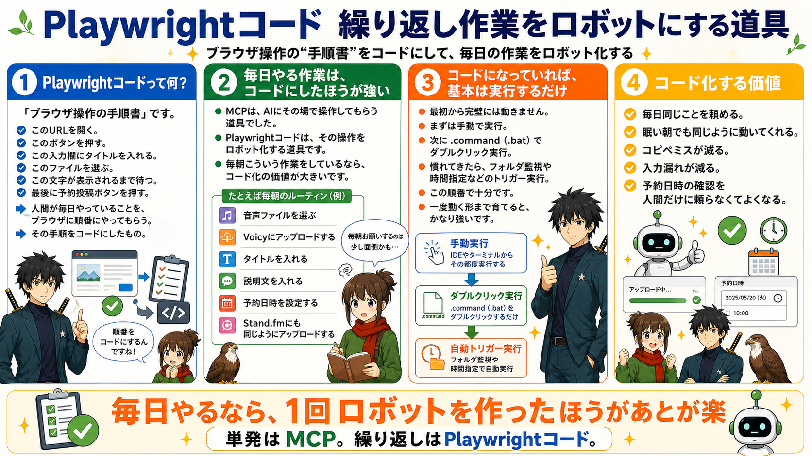
ここで急に「コード」という言葉が出てきます。
たぶん、少し身構えますよね。
- 「やっぱりコード書くんじゃん」
- 「結局プログラミングできないと無理では？」
- 「Pythonとか覚えないといけないの？」
そう思うかもしれません。
でも、この教材での立ち位置は少し違います。
あなたがコードをスラスラ書く必要はありません。
コードを書くのは、基本的にCodexやClaude Codeです。
あなたがやるのは、
- 自分の作業を見せること
- 何をしたいか伝えること
- AIが書いたコードを動かすこと
- 止まったら、止まった状況をAIに伝えること
まずは、この4つです。
コードは「魔法の呪文」ではなく、手順書です
コードというと、
何かすごく難しいものに見えますよね。
黒い画面に英語が並んでいて、
1文字でも間違えたら終わり、みたいなイメージがあるかもしれません。
でも、ここで使うPlaywrightコードは、
かなりざっくり言えば「ブラウザ操作の手順書」です。
- このURLを開く。
- このボタンを押す。
- この入力欄にタイトルを入れる。
- このファイルを選ぶ。
- この文字が表示されるまで待つ。
- 最後に予約投稿ボタンを押す。
人間が毎日やっていることを、
ブラウザに順番にやってもらう。
その手順をコードにしたものです。
もちろん、中身には専門的な書き方があります。
でも、最初から全部読めなくて大丈夫です。
大事なのは、
「これは自分の作業手順が書かれたものなんだ」
と捉えることかなと思います。
毎日やる作業は、コードにしたほうが強い
MCPは、AIにその場で操作してもらう道具でした。
Playwrightコードは、
その操作をロボット化する道具です。
たとえば、毎朝こういう作業をしているとします。
- 音声ファイルを選ぶ。
- Voicyにアップロードする。
- タイトルを入れる。
- 説明文を入れる。
- 予約日時を設定する。
- Stand.fmにも同じようにアップロードする。
これを毎朝CodexやClaude Codeに頼むのは、まだ少し面倒だと思います。
でも、コードになっていれば、
基本的には実行するだけです。
python3 upload.pyこれで、
同じ操作を毎回同じ順番で進めてくれます。
もちろん、最初から完璧には動きません。
ここは何度でも言います。
最初から完璧には動きません。
でも、一度動く形まで育てるとかなり強いです。
- 毎日同じことを頼める。
- 眠い朝でも同じように動いてくれる。
- コピペミスが減る。
- 入力漏れが減る。
- 予約日時の確認を人間だけに頼らなくてよくなる。
ここが、コード化する価値だと思います。
.commandファイルにすると、ダブルクリックで動かせる
Playwrightコードは、
毎回ターミナル（PowerShell）を開いてコマンドを打たないといけないわけではありません。
Macなら、.command というファイルを作っておくと、
それをダブルクリックするだけで自動化を開始できます。
💻 Windowsをお使いの方へ
Windowsでは .bat（バッチファイル）が同じ役割を果たします。CodexかClaude Codeに「Windowsでダブルクリックで実行できる .bat ファイルにしてください」と頼めば作ってもらえます。
たとえば、
audio_upload.command
というファイルをデスクトップに置いておく。
朝、音声ファイルを用意したら、
そのファイルをダブルクリックする。
すると、
自動でブラウザが立ち上がって、
ログイン済みの画面を開いて、
アップロード作業が始まる。
こういう形にできます。
これ、非エンジニアの人にはかなり大事だと思います。
毎回、
「ターミナル（PowerShell）を開いて」
「このコマンドを入力して」
「このフォルダに移動して」
みたいなことをやると、そこで嫌になります。
でも、ダブルクリックならかなり現実的です。
もちろん、最初に .command ファイルを作るところはAIに頼めばOKです。
このPlaywrightのPythonコードを、
Macでダブルクリックするだけで実行できる `.command` ファイルにしてください。
実行前に必要なフォルダへ移動し、
エラーが出た場合はターミナル（PowerShell）を閉じずに止まるようにしてください。こう頼めば、CodexやClaude Codeが作ってくれます。
何かをきっかけに、自動で始めることもできる
さらに進むと、
ダブルクリックすら不要にできます。
たとえば、
- 特定のフォルダにファイルが入ったら始める
- スプレッドシートに新しい行が追加されたら始める
- 毎朝9時になったら始める
- メールを受信したら始める
- フォーム回答が届いたら始める
こういう「きっかけ」をトリガーにして、
ブラウザ作業を始めることもできます。
最初からここまでやる必要はありません。
まずは手動で実行。
次に .command でダブルクリック実行。
慣れてきたら、フォルダ監視や時間指定などのトリガー実行。
この順番で十分です。
いきなり完全自動にしようとすると大変ですが、
段階を分ければかなり現実的になります。
Playwrightコードに向いている作業
こんな作業が向いています。
- 音声や動画のアップロード
- SNS投稿の下準備
- 管理画面への情報入力
- 予約情報の確認
- 請求書データの転記
- 画像ファイルの整理
- フォーム送信
- PDFのダウンロード
- 定型メールの作成
あなたが一番時間を使っている定型作業は、どんなことですか？
ぜひこの中から、まず一つ試してみましょう。
最初は小さい単位で始める
ただし、ここで大事なのは、
いきなり全部を自動化しようとしないことです。
たとえば、
「問い合わせ対応を全部自動化する」
だと大きすぎます。
でも、
「問い合わせメールをスプレッドシートに転記する」
なら小さいです。
「請求書業務を全部自動化する」
だと大きすぎます。
でも、
「請求書PDFをDriveに保存して、金額と日付だけ一覧にする」
なら始められます。
最初は、
人間が見て「それならできそう」と思える範囲で十分だと思います。
そして、その小さい自動化が1つ動くと、
次にこう思えるようになります。
「じゃあ、この後の照合もできるかも」
「じゃあ、未返信だけ抽出できるかも」
「じゃあ、送信結果の記録までできるかも」
この感覚が、自動化の入口なんですよね。
ポイントは、
「毎回まったく同じかどうか」ではありません。
少し違っていても大丈夫です。
- タイトルだけ毎回違う。
- ファイルだけ毎回違う。
- 日付だけ毎回違う。
- 説明文だけ毎回違う。
このくらいなら、
むしろ自動化しやすいことも多いです。
変わる部分だけ入力欄や設定ファイルにして、
それ以外をロボットに任せればいいからです。
③ Computer Use 普通のやり方で届かないときの最後の手段
3つ目が、Computer Useです。
これは、
Claudeが画面を見ながら、
マウスやキーボード操作を手伝う仕組みです。
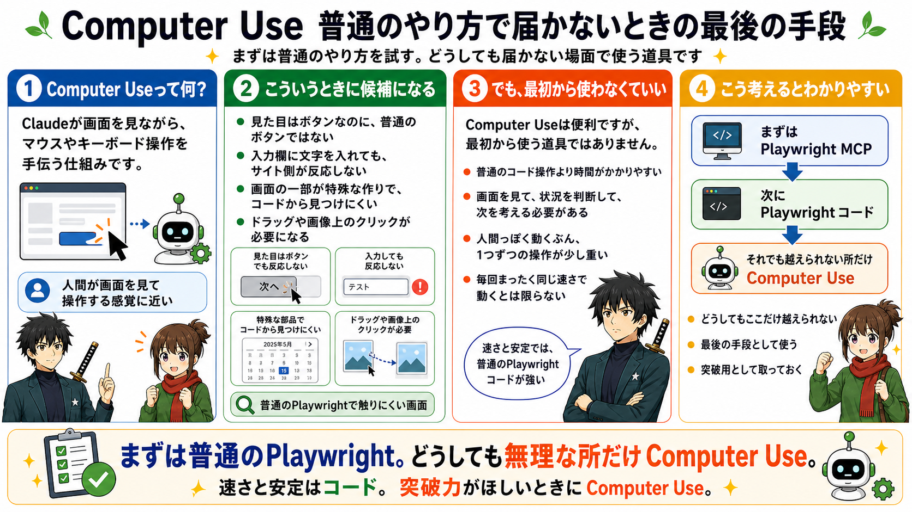
MCPやPlaywrightコードは、
ブラウザの中の構造を見て操作します。
- 「このボタン」
- 「この入力欄」
- 「このファイル選択」
というように、ページの中にある部品を探して触ります。
でも、サイトによっては、
この普通の触り方が効かないことがあります。
- 見た目はボタンなのに、普通のボタンではない。
- 入力欄に文字を入れても、サイト側が反応してくれない。
- 画面の一部が特殊な作りになっていて、コードから見つけにくい。
- ドラッグや画像上のクリックが必要になる。
こういうときにComputer Useが候補になります。
Computer Useは、
人間が画面を見て操作するのに近いです。
なので、普通のPlaywrightで届きにくい画面でも、
突破できることがあります。
ただし、Computer Useを最初から使う必要はありません
ここは大事です。
Computer Useは便利ですが、
最初から使う道具ではありません。
理由はシンプルで、
普通のコード操作より時間がかかりやすいからです。
画面を見て、
状況を判断して、
次の操作を考えて、
マウスを動かして、
また画面を見る。
人間っぽく動くぶん、
一つひとつの操作に時間がかかります。
そして、毎回まったく同じ速さで動くわけでもありません。
なので、
普通のPlaywrightコードで動くなら、
そちらのほうが速くて安定します。
Computer Useは、
「どうしてもここだけ越えられない」
という場面のために取っておくくらいでいいと思います。
少し未来の話：AIブラウザ操作の今
ここで、少し未来っぽい話もしておきます。
最近のCodexでは、
AIがブラウザを見て、
必要なところをクリックし、
エラー表示を確認しながら直していく流れも出てきています。
参考：https://x.com/jameszmsun/status/2047522852854026378
これは、
ただ「AIがコードを書く」だけではなく、
AIが作って、試して、失敗したところを見て、直す
方向に進んでいるということです。
ここは、かなり面白い進化だと思います。
ただし、
「じゃあ業務画面を全部AIに任せればいい」
という話ではありません。
AIがクリックできることと、
業務として安全に任せられることは、
まだ別です。
- 保存ボタンを押し間違える。
- エラー表示を見落とす。
- ログインが切れている。
- 入力欄が1つ残っている。
- 通信が遅れて、まだ保存が終わっていない。
- サイト側の仕様変更で、昨日までの手順が変わっている。
こういうことは普通に起きます。
自動化で一番怖いのは、
「止まること」ではありません。
失敗しているのに、成功したことになって進むこと
です。
だからこの教材では、
まずPlaywrightで、
決まった画面・決まった手順を安定して自動化するところから始めます。
AIブラウザ操作は、
最初から全部を任せるものではなく、
まずは画面確認やエラー発見の補助として使う。
このくらいの距離感が、今はかなり現実的です。
迷ったら、この順番で考えてください
では、実際に自分の業務を自動化するとき、
どれを使えばいいのか。
迷ったら、この順番で考えてください。
まず、
「この作業は1回だけか、繰り返すか」
を見ます。
1回だけなら、MCPで十分なことが多いです。
繰り返すなら、Playwrightコード化を考えます。
次に、
「そもそもこの画面は自動操作できそうか」
を見ます。
ここでMCPが役に立ちます。
Claudeに画面を触ってもらって、
入力できるか。
クリックできるか。
アップロードできるか。
保存できるか。
まず試します。
うまくいきそうなら、
その流れをコードにします。
コードにして動かしてみて、
途中で詰まったら、
エラーやスクリーンショットをClaudeに渡して直します。
それでも、
どうしても特定の画面だけ動かない。
普通のクリックや入力では反応しない。
何度直しても同じ場所で止まる。
そのときに、Computer Useを検討します。
流れとしてはこうです。
まずMCPで下見する
↓
繰り返す作業ならPlaywrightコードにする
↓
コードを動かして、詰まったところを直す
↓
どうしても普通の操作で突破できないところだけComputer Useを使うこの順番で十分です。
Pythonは覚えなくていいのか
ここも気になると思います。
Playwrightコードでは、
Pythonというプログラミング言語を使うことが多いです。
では、Pythonを勉強しないといけないのか。
結論、
最初から本格的に勉強しなくて大丈夫です。
もちろん、わかるに越したことはありません。
でも、この教材の目的は、
Pythonを学ぶことではありません。
自分の業務を1個ラクにすることです。
なので、最初はこう考えてください。
Pythonは、Claudeがロボットを作るために使う言葉。
自分は、そのロボットに何をしてほしいか伝える人。
この役割分担でいいです。
自分が見るべきなのは、
コード全体の細かい文法ではありません。
- どのファイルを使っているか。
- どのページを開いているか。
- どこで止まったか。
- どんなエラーが出たか。
このあたりです。
それだけでも、十分前に進めます。
第1章のまとめ
覚えてほしいことは、多くないです。
まずはMCP。
Claudeにブラウザを触ってもらい、
作業が自動化できそうか試すための道具です。
繰り返すならPlaywrightコード。
毎日・毎週・毎月やる作業は、
Claudeにコードを書いてもらって、
ロボット化したほうが強いです。
どうしても動かないならComputer Use。
普通のMCPやコードでは届かない画面だけ、
Claudeに画面を見ながら操作してもらいます。
ここまでわかれば十分です。
次の章では、
実際にどうやって自動化を作っていくのかを、
4つのフェーズに分けて見ていきます。
難しいことを一気にやる必要はありません。
- 録画する。
- 渡す。
- 作ってもらう。
- 動かす。
- 止まったら伝える。
- 直す。
この繰り返しです。
最初からきれいにできなくても大丈夫です。
むしろ、最初は詰まりながら進むものだと思っておいてください。
この章に出てくる用語
- Playwright MCP：Claude / CodexがリアルタイムでブラウザをAI操作するための接続設定。AIが「見ながら操作」できる「下見」向きの道具
- Playwrightコード：AIが生成したPythonスクリプト。毎日の繰り返し作業を全自動で回すのに向いている
- Computer Use：AIがスクリーン画像を見ながらPCを操作するAnthropicの機能。Playwrightが使えない場面の最後の手段
- セレクター：ウェブページ上の要素（ボタン・入力欄など）を指定する識別子。CSSセレクターやXPathで記述する
第2章 方法編：録画から自動化までの4フェーズ
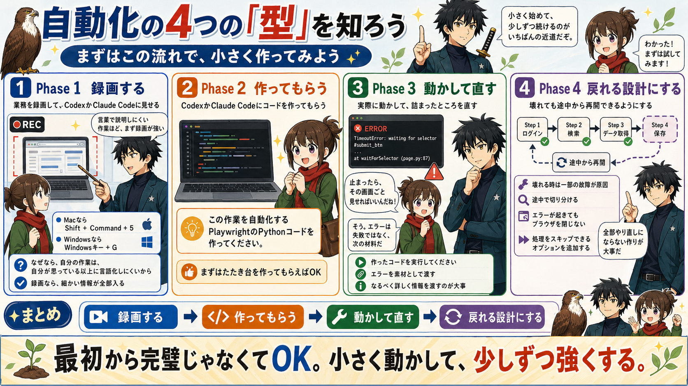
4フェーズの全体像
フェーズ早見表（クリックで該当箇所へ）
| フェーズ | 目的 | 完了ライン |
|---|---|---|
| Phase 1 録画する | 自分の作業をAIに見せる | AIが作業の流れを説明できる状態 |
| Phase 2 コード化する | AIにスクリプトを作ってもらう | 最小版コードが実行できる準備が整った状態 |
| Phase 3 動かして直す | エラーをAIに渡して修正する | 最小版が最後まで通して動いた状態 |
| Phase 4 再開できる設計にする | 途中で止まっても戻れるようにする | 途中停止しても怖くない状態 |
Phase 1 録画する — 自分の作業をAIに見せる
目的：自分の作業をAIに正確に伝える
やること：画面録画をして、CodexかClaude Codeに渡す
完了ライン：AIが「どのページで何をするか・どの入力が変わるか・難しい箇所はどこか」を説明できる状態
最初にやることは、録画です。
Macでの録画方法
Macなら、画面録画は標準機能でできます。
Shift + Command + 5これを押すと、画面収録のメニューが出ます。
「画面全体を収録」を選びます。
ウィンドウだけではなく、できれば画面全体を録ってください。
URLバーやタブの情報もAIのヒントになるからです。
録画を始めたら、普段どおりに作業します。
終わったら、メニューバーの停止ボタンを押します。
録画ファイルは、基本的にデスクトップに保存されます。
Windowsでの録画方法
Windowsでも、標準機能で録画できます。
まず試してほしいのは、これです。
Windowsキー + Gこれを押すと、Xbox Game Barという録画メニューが開きます。
録画ボタンを押すと、今開いている画面の録画が始まります。
録画を止めると、基本的には「ビデオ」フォルダの中の「キャプチャ」フォルダに保存されます。
もし Windowsキー + G でうまく録画できない場合は、PowerPointの画面録画機能を使っても大丈夫です。
PowerPointを開いて、「挿入」→「画面録画」を選ぶと、指定した範囲を録画できます。
録画した動画を右クリックして、「メディアに名前を付けて保存」を選べば、動画ファイルとして保存できます。
Windowsの場合も、できればブラウザのURLバーやタブが見えるように録ってください。
「え、録画するんですか？」
「文章で説明するんじゃないんですか？」
と思うかもしれません。
もちろん、文章で説明してもいいです。
でも、最初は録画のほうが圧倒的に楽です。
なぜなら、
自分の作業は、自分が思っている以上に言語化しにくいからです。
毎日やっている作業ほど、
無意識でやっています。
どのボタンを押しているか。
どの画面で待っているか。
どこでファイルを選んでいるか。
どの項目は毎回同じで、
どの項目だけ毎回変えているか。
自分ではわかっているつもりでも、
いざ説明しようとすると抜けます。
「ログインして、アップロードして、予約します」
みたいな説明になりがちです。
でも、CodexやClaude Codeが知りたいのはそこではありません。
- どのURLを開くのか。
- ログイン後にどの画面に行くのか。
- アップロードボタンはどこにあるのか。
- ファイル選択後に何秒くらい待つのか。
- タイトル欄の名前は何か。
- 予約日時はどの形式で選ぶのか。
- 最後に確認画面があるのか。
こういう細かい情報です。
録画なら、それが全部入ります。
だから、作業そのままを録画しましょう。
録画は、きれいに撮らなくていい
ここも大事です。
録画は、きれいに撮らなくていいです。
YouTube動画を作るわけではありません。
CodexやClaude Codeに作業を見せるための材料です。
- 途中で少し迷っても大丈夫です。
- クリックし直しても大丈夫です。
- 読み込みで待っても大丈夫です。
- 一度間違えて戻っても大丈夫です。
むしろ、そのほうが役に立つこともあります。
なぜなら、
実際の業務ではそういうことが起きるからです。
- 読み込みが遅い。
- 確認画面が出る。
- 一度押しても反応しない。
- ログインが切れている。
- ファイル選択で迷う。
こういう現実の揺れも、
CodexやClaude Codeに見せたほうがいいです。
もちろん、個人情報やパスワードが映る場合は注意してください。
- パスワード入力の場面は隠す。
- 顧客情報が映る画面は別のサンプルで撮る。
- 本番投稿して困る場合は、下書きやテスト用データで撮る。
ここだけ気をつければ大丈夫です。
録画するときに入れてほしいもの
録画には、できるだけ次の情報を入れてください。
- 最初に開くページ。
- ログインが必要なら、ログイン後にどこへ進むか。
- アップロードするファイルをどこから選ぶか。
- 毎回同じ入力と、毎回変わる入力の違い。
- 最後に押すボタン。
- 完了したと判断できる画面。
ここまで映っていると、
CodexやClaude Codeはかなり理解しやすくなります。
逆に、途中から録画が始まっていると、
CodexやClaude Codeは迷います。
- 「この画面にはどうやって来たんですか？」
- 「ログインは必要ですか？」
- 「前の画面で何を選んだんですか？」
という話になります。
なので、できれば最初から最後まで録ります。
1回通しで見せる。
これが基本です。
録画時の注意点
録画するときは、
次の3つだけ気をつけてください。
1つ目は、パスワードを映さないこと。
ログインが必要な場合は、
ログイン後の画面から録画を始めても大丈夫です。
2つ目は、個人情報や顧客情報をそのまま映さないこと。
可能なら、テスト用のデータやサンプルの画面で撮ってください。
3つ目は、最後の完了画面まで録ること。
AIは、
「どこまで行けば成功なのか」
を知りたいからです。
- 保存完了。
- 送信完了。
- 一覧に追加された。
- ステータスが変わった。
こういう最後の状態まで映っていると、
コード化するときの判断がかなりしやすくなります。
CodexかClaude Codeに渡す最初の言い方
録画できたら、
CodexかClaude Codeにその動画を渡します。
最初の指示は、難しく考えなくて大丈夫です。
たとえば、こうです。
この動画は、私が毎日やっている○○の作業です。
まず、この作業を自動化するために、
動画の中で行っている操作をステップごとに整理してください。
そのうえで、PlaywrightのPythonコードで自動化できそうか、
難しそうな箇所があるかも教えてください。いきなり、
「完璧なコードを書いて」
と言わなくて大丈夫です。
最初は、CodexやClaude Codeに作業を理解してもらうことが目的です。
動画を見て、
作業手順を分解してもらう。
自動化しやすい部分と、詰まりそうな部分を見つけてもらう。
これがPhase 1です。
Phase 1でCodexかClaude Codeに確認してもらうこと
CodexやClaude Codeには、次のように聞くと進めやすいです。
この作業を以下の形で整理してください。
1. 作業全体の目的
2. 操作手順
3. 毎回変わる入力
4. 毎回同じ入力
5. ログインが必要な箇所
6. ファイルアップロードが必要な箇所
7. 自動化で詰まりそうな箇所
8. 最初に作るべき最小版この「最小版」が大事です。
最初から全部入りを作ろうとすると、かなり大変です。
- VoicyとStand.fmも全部。
- サムネイルもカテゴリも予約日時も全部。
- エラー回復もログ保存も全部。
気持ちはわかります。
でも、最初は小さくていいです。
- まずVoicyの投稿画面まで開ける。
- 次に音声ファイルを選べる。
- 次にタイトルだけ入れられる。
- 次に予約日時を入れられる。
- 次に投稿直前まで進める。
このように分けたほうが、
結果的に早いです。
Phase 1の完了ライン
Phase 1は、
CodexやClaude Codeが作業の流れを説明できるようになったら完了です。
具体的には、
- どのページで何をするか。
- どの入力が毎回変わるか。
- どの操作が難しそうか。
- 最初にどこまで作るか。
このあたりが整理されていればOKです。
まだコードは完成していなくて大丈夫です。
この段階で大事なのは、
「AIと自分が、同じ作業を見ている状態」
を作ることです。
ここがズレたままコードを書かせると、
あとで大きくズレます。
目的：自分の作業をAIに正確に伝える
やること：画面録画をして、CodexかClaude Codeに渡す
完了ライン：AIが「どのページで何をするか・どの入力が変わるか・難しい箇所はどこか」を説明できる状態
Phase 2 コード化する — AIにスクリプトを作ってもらう
次は、コードを作ってもらう段階です。
ここでやることはシンプルです。
Phase 1で整理した内容をもとに、
CodexかClaude Codeにこう言います。
では、この作業を自動化するPlaywrightのPythonコードを作ってください。
最初は最小版で構いません。
まずは○○の画面を開き、
ログインして、
投稿画面まで進むところまで作ってください。
ブラウザは表示した状態で動かしてください。
エラーが起きたらスクリーンショットを保存してください。ポイントは、
「最初は最小版でいい」
と伝えることです。
AIに頼むとき、
つい全部まとめてお願いしたくなります。
でも、最初から全部やらせると、
どこで失敗したのかわかりにくくなります。
- まず小さく作る。
- 動いたら足す。
- また動いたら足す。
このほうが、未経験の人には圧倒的に楽です。
最初に作ってもらうファイル
Claudeが作るものは、
だいたい次のようなものです。
upload.py
.env
requirements.txtupload.py は、メインのロボットです。
ここに、
- ブラウザを開く。
- ログインする。
- ファイルをアップロードする。
- 入力する。
- ボタンを押す。
といった処理が書かれます。
.env は、ログイン情報などを書くファイルです。
名前の由来は environment（環境） の略で、「このプログラムを動かす環境の設定」という意味です。
メールアドレスやパスワードを、コード本体に直接書かないために使います。
requirements.txt は、必要な道具の一覧です。
名前のまま「requirements（必要なもの）」を.txtファイルに書いたもの、という意味です。
Pythonでこのロボットを動かすために、
何をインストールすればいいかが書かれます。
この時点で、
それぞれの中身を完璧に理解しなくて大丈夫です。
まずは、
メインの処理は upload.py。
秘密情報は .env。
必要な道具リストは requirements.txt。
これだけわかれば十分です。
パスワードはAIに直接渡さなくていい — .envファイルの使い方
ここは気をつけてほしいところです。
パスワードやメールアドレスを、AIのチャット欄に直接貼らないでください。

Codex、Claude Code、ChatGPTのチャット欄に
パスワードやAPIキーをそのまま入力してしまう人がいます。
チャット履歴はサーバーに残ります。
また、.env ファイルをGitHubに上げてしまうと、
世界中の人から見える場所にパスワードを置くことになります。
.env の中には、
メールアドレス、パスワード、APIキーなど、
外に出してはいけない情報が入ることがあります。
自分では「教材用の小さなファイル」と思っていても、
中身が本物なら、アカウントにログインされたり、
APIを勝手に使われたりする可能性があります。
もし間違って .env の中身をチャット欄に貼ってしまったり、
公開リポジトリに上げてしまった場合は、
そのパスワードやAPIキーは「もう漏れたかもしれない」と考えてください。
その場合は、貼ってしまった文字を消すだけでは足りません。
- サービス側でパスワードを変更する。
- APIキーなら古いキーを無効化して、新しいキーを作る。
ここまでやって、初めて安全に近づきます。
では、どうするか。
ログインが必要な自動化では、.env というファイルを作って、そこに自分で書きます。
たとえば、こうです。
SERVICE_EMAIL=your_email@example.com
SERVICE_PASSWORD=your_passwordCodexやClaude Codeには、
ログイン情報は.envから読み込む形にしてください。
実際のメールアドレスやパスワードは私が.envに書きます。と伝えれば大丈夫です。
AIにパスワードを直接渡す必要はありません。
また、自動化コードをGitHubで管理する場合は、.gitignore というファイルに、必ず次の1行を入れてください。
.env.gitignore は、
「このファイルはGitHubに上げないでね」
とGitに伝えるためのメモです。
意味がわからなくても、まずはCodexかClaude Codeにこう頼めば大丈夫です。
.env をGitHubに上げないようにしたいです。
.gitignore に .env を追加してください。
すでにGit管理に入っていないかも確認してください。.env ファイルの作り方
ここ、意外と詰まる人が多いです。
「.env に書いてください」
と言われても、
- 「どこにあるの？」
- 「どうやって作るの？」
- 「拡張子って何？」
- 「メモ帳で作っていいの？」
となるんですよね。
なので、ここはかなり具体的に書きます。
.env は、ただのテキストファイルです。
ただし、名前が少し特殊です。
ファイル名は、
.envこれだけです。
env.txt ではありません。.env.txt でもありません。
先頭にドットが付いていて、
拡張子はありません。
ここがまず引っかかりやすいです。
Macで .env を作る方法
Macなら、いちばん簡単なのはCodexかClaude Codeに作ってもらう方法です。
こう頼んでください。
この自動化コードと同じフォルダに `.env` ファイルを作ってください。
中身は以下の雛形だけにしてください。
SERVICE_EMAIL=
SERVICE_PASSWORD=
実際のメールアドレスとパスワードは私があとで自分で入力します。これで .env の雛形を作ってもらいます。
そのあと、自分で .env を開いて、
右側に値を書きます。
たとえば、こうです。
SERVICE_EMAIL=your_email@example.com
SERVICE_PASSWORD=your_passwordイコールの左側は、AIが作った名前のままにします。
自分が書き換えるのは、イコールの右側だけです。
SERVICE_EMAIL=ここにメールアドレス
SERVICE_PASSWORD=ここにパスワードという感覚です。
もしファイルを開けない場合は、
右クリックして「このアプリケーションで開く」から
「テキストエディット」を選びます。
開いたら入力して、保存します。
これでOKです。
Windowsで .env を作る方法
Windowsでも、考え方は同じです。
まず、CodexかClaude Codeにこう頼みます。
この自動化コードと同じフォルダに `.env` ファイルを作ってください。
中身は以下の雛形だけにしてください。
SERVICE_EMAIL=
SERVICE_PASSWORD=
実際のメールアドレスとパスワードは私があとで自分で入力します。もし自分で作る場合は、
メモ帳を開いて、次のように書きます。
SERVICE_EMAIL=your_email@example.com
SERVICE_PASSWORD=your_password保存するときに注意があります。
ファイル名は必ず、
.envにします。
メモ帳で保存すると、
勝手に .txt が付いて
.env.txtになってしまうことがあります。
これだと、コードが読み込めません。
保存画面で、
ファイルの種類を「すべてのファイル」にしてから、
ファイル名に .env と入力してください。
文字コードは、選べる場合は UTF-8 で大丈夫です。
.env でよくあるミス
よくあるミスは、このあたりです。
ファイル名が .env.txt になっている。
.env がコードと違うフォルダにある。
イコールの前後に余計な記号を入れている。
メールアドレスやパスワードを、チャットに貼ってしまっている。
全角の記号を入れている。
たとえば、これはOKです。
SERVICE_EMAIL=sample@example.com
SERVICE_PASSWORD=abc123これは避けてください。
SERVICE_EMAIL = sample@example.com
SERVICE_PASSWORD＝abc123
SERVICE_PASSWORD="abc123"サービスによっては引用符があっても動くことがありますが、
初心者のうちは、まずシンプルに書くのが安全です。
.env がうまく読めないときの聞き方
ログインで止まったり、
「環境変数が見つかりません」
のようなエラーが出たら、AIにこう聞いてください。
.env を作ったのですが、ログイン情報が読み込めていないようです。
確認してほしいこと：
1. `.env` がコードと同じフォルダにあるか
2. ファイル名が `.env.txt` になっていないか
3. Pythonコード側の読み込み名と、.env側の名前が一致しているか
4. python-dotenv が必要なら requirements.txt に入っているか
ただし、.envの中身そのものは表示しないでください。
秘密情報を見せずに、設定だけ確認してください。ポイントは、
中身を見せずに、設定だけ見てもらう
ことです。
パスワードそのものを貼らなくても、
ファイル名、場所、読み込み名のズレは確認できます。
ブラウザは、最初は見える状態で動かす（headless=False）
CodexやClaude Codeにコードを書いてもらうとき、
こう伝えてください。
headless=Falseで、ブラウザを表示した状態で動かしてください。headlessという言葉が出てきました。
難しく見えますが、
意味はシンプルです。
自動作業中に
ブラウザを画面に表示せず、裏側で動かすか。
ブラウザを画面に表示して、動きを見ながら実行するか。
この違いです。
最初は、必ず見える状態で動かしてください。
なぜなら、
どこで止まったかを見たいからです。
裏側で動かしてしまうと、
何が起きたのかわかりません。
- ログイン画面で止まったのか。
- ファイル選択で止まったのか。
- 保存ボタンの前で止まったのか。
見えないと、AIへの報告もしにくくなります。
最初は遅くていいです。
見えることのほうが大事です。
Phase 2の完了ライン
Phase 2は、
最小版のコードができて、
実行できる準備が整ったら完了です。
ここで、
最後まで動く必要はありません。
大事なので、もう一度書きます。
最後まで動く必要はありません。
Phase 2の目的は、
完璧な完成品を得ることではありません。
動かして検証できる最初の形を作ることです。
ここまで来たら、
いよいよ実行します。
そして、たぶん止まります。
それで正常です。
目的：Phase 1の整理をもとに、最小版のコードを作る
やること：CodexかClaude Codeに最小版コードを作ってもらい、
.envを設定する完了ライン：コードが実行できる準備が整った状態（最後まで動く必要はない）
Phase 3 動かして直す — エラーをAIに渡して修正する
⚠️ 自動化は、一発で完成させようとしないでください。
🛑 最初のコードは止まります。ログインで止まる。ボタンが見つからなくて止まる。ファイルの場所が違って止まる。ページの読み込みを待てなくて止まる。
これは失敗ではありません。
ここで焦らないでください。
最初の実行は、
完成チェックではありません。
材料集めです。

詰まったときの報告テンプレート
止まったら、Claudeにこう伝えます。
実行したところ、以下のエラーが出ました。
[ターミナル（PowerShell）に出たエラー文をそのまま貼る]
このとき画面はこうなっています。
[スクリーンショットを貼る]
期待していた動作：
○○ボタンが押されて、次の画面に進むはずでした。
実際の動作：
○○の画面で止まりました。
原因を推測して、必要な修正をコードに反映してください。これで十分です。
ポイントは、
「エラー文だけ」ではなく、
「画面の状態」と「期待していた動き」も伝えることです。
Claudeはエラー文だけでも考えられます。
でも、
実際の画面がどうなっているかがあると、
かなり精度が上がります。
人間に相談するときも同じです。
「動きません」
だけだと困ります。
でも、
「この画面で止まっています」
「本当は次の画面に行くはずでした」
「このボタンを押すところで止まりました」
と言われると、かなりわかります。
Claudeにも、同じように症状を伝えます。
クリックの正しさは「結果」で判断する
ここで、Playwright自動化のかなり大事な考え方を入れておきます。
自動化では、
「クリック場所そのものが正しいか」だけを見ません。
その操作のあと、
画面やデータが期待した状態になっているか。
ここで判断します。
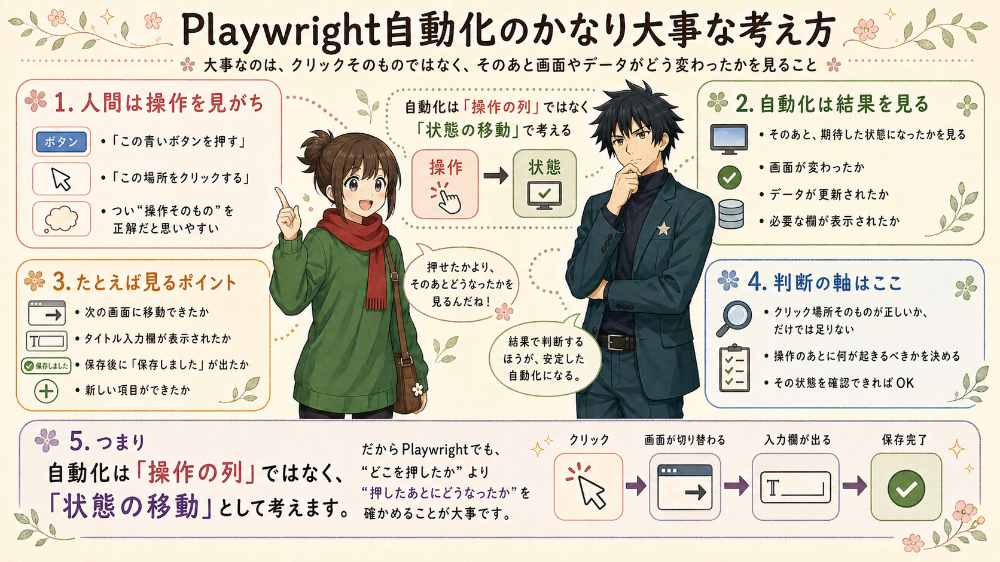
人間の作業だと、
「この青いボタンを押す」
と考えがちです。
でも自動化では、
「募集作成画面に移動できたか」
「タイトル入力欄が表示されたか」
「保存後に“保存しました”が出たか」
「一覧に新しい募集が増えたか」
を見るほうが大事です。
つまり、
自動化は「操作の列」ではなく、
「状態の移動」として考えます。
たとえば、宿泊施設の募集を作るフォームを入力するとすれば
ログイン前
↓
ログイン済み
↓
宿選択済み
↓
募集作成画面
↓
入力済み
↓
保存済み
↓
公開済み
↓
URL取得済みこの階段を作るイメージです。
そして各段で、
- 今どの状態か。
- 次の状態に行くには何を押すか。
- 次の状態に行けた証拠は何か。
この3つを決めます。
これができると、
AIに直してもらうときもかなり楽になります。
状態確認は4段階で考える
クリックが正しかったかを見るときは、
4段階で考えると整理しやすいです。
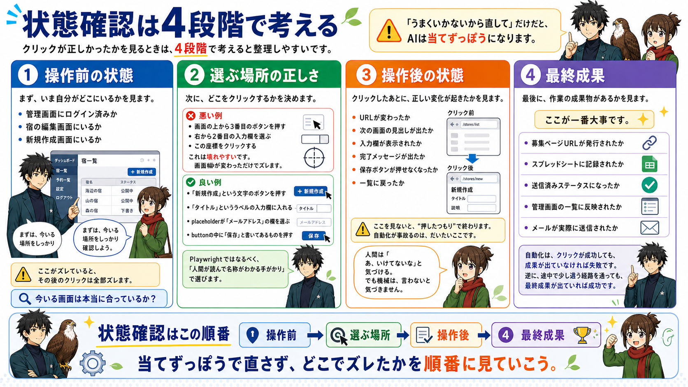
1. 操作前の状態
まず、
いま自分がどこにいるかを見ます。
たとえば、
管理画面にログイン済みか。
宿の編集画面にいるか。
新規作成画面にいるか。
ここがズレていると、
その後のクリックは全部ズレます。
だから最初に見るべきは、
「今いる画面は本当に合っているか？」
です。
2. 選ぶ場所の正しさ
次に、
どこをクリックするかを決めます。
ここで大事なのは、
「見た目の位置」ではなく、
「名称」で選ぶことです。
＜悪い例＞
画面の上から3番目のボタンを押す。
右から2番目の入力欄を選ぶ。
この座標をクリックする。
これは壊れやすいです。
画面幅が変わっただけでズレます。
＜良い例＞
「新規作成」という文字のボタンを押す。
「タイトル」というラベルの入力欄に入れる。
placeholderが「メールアドレス」の欄を選ぶ。
buttonの中に「保存」と書いてあるものを押す。
です。
Playwrightではなるべく、
「人間が読んで名称がわかる手がかり」
で選びます。
3. 操作後の状態
クリックしたあとに、
正しい変化が起きたかを見ます。
たとえば、
- URLが変わったか。
- 次の画面の見出しが出たか。
- 入力欄が表示されたか。
- 完了メッセージが出たか。
- 保存ボタンが押せなくなったか。
- 一覧に戻ったか。
ここを見ないと、
“押したつもり”で終わります。
自動化が事故るのは、
だいたいここです。
人間は画面を見て、
「あ、いけてないな」
と気づけます。
でも機械は、
言わないと気づきません。
4. 最終成果
最後に、
作業の成果物があるかを見ます。
ここが一番大事です。
たとえば、
- 募集ページURLが発行されたか。
- スプレッドシートに記録されたか。
- 送信済みステータスになったか。
- 管理画面の一覧に反映されたか。
- メールが実際に送信されたか。
自動化は、
クリックが成功しても、
成果が出ていなければ失敗です。
逆に、
途中で少し違う経路を通っても、
最終成果が出ていれば成功です。
AIに渡すべき情報も変わる
「うまくいかないから直して」
だけだと、
AIは当てずっぽうになります。
でも、
ここまで言うと、
AIはかなり直しやすくなります。
新規作成ボタンを押した後、
本来は「募集タイトル」の入力欄が出るはずです。
しかし実際は一覧画面のままです。
現在のURLはこれです。
[URLを貼る]
ボタンの文言は「新規募集を作成」です。
この状態遷移が失敗しています。「どこを押したか」だけではなく、
- どの状態から始めたか。
- 何をしようとしたか。
- どの操作で止まったか。
- 本来どうなってほしかったか。
- 実際どうなったか。
これを具体的に渡すのがコツです。
できれば、
画面のスクリーンショット、
エラーメッセージ、
その時のURL、
HTMLの一部、
成功時の画面との差分も渡します。
もちろん全部を毎回そろえる必要はありません。
でも、
情報が多いほど、
AIは推測ではなく原因に近づけます。
クリックの判断基準はこの順番
クリックや入力欄の選び方は、
強い順に並べるとこうです。
画面上の文言で選ぶ。
ラベル名で入力欄を選ぶ。
ボタンの役割で選ぶ。
URLの変化で確認する。
完了メッセージで確認する。
一覧やデータで最終確認する。
座標クリックは最後の手段。
座標クリックは、
本当に最後です。
「このへんを押せばいける」
は、人間には便利です。
でも機械には危ないです。
- 画面サイズが変わる。
- 表示位置が変わる。
- 広告やメニューが増える。
それだけでズレます。
だから、
まずは文字やラベルで選ぶ。
それでもダメなら、
役割や構造で選ぶ。
それでもダメなら、
最後に座標クリックを使う。
この順番で考えてください。
たとえるなら、駅の乗り換えです
人間は、
「あの階段を上がって、右に曲がって、青い看板の下」
みたいに覚えます。
でも自動化では、
「新宿駅にいる」
「山手線ホームに移動する」
「池袋方面の表示がある」
「電車に乗る」
「池袋に着いた」
と確認していくほうが安定します。
“右に曲がる”より、
“池袋方面のホームにいるか”のほうが大事。
ブラウザ操作も同じです。
“青いボタンを押したか”より、
“目的の画面に着いたか”を見る。
この考え方に変えるだけで、
自動化はかなり壊れにくくなります。
スクリーンショットは自動で保存させる
毎回手でスクリーンショットを撮るのは面倒です。
なので、最初からClaudeにこう頼んでください。
エラーが起きたときは、
現在の画面のスクリーンショットを自動で保存してください。
ファイル名には、どのステップで止まったかがわかる名前を入れてください。たとえば、
error_login.png
error_upload.png
error_publish_button.pngのようなファイルです。
これがあると、
あとでClaudeに見せやすくなります。
「ここで止まりました」
と言うだけでなく、
実際の画面を渡せます。
これはかなり大事です。
失敗したときに毎回残すもの（エラーレポート）
自動化が止まったときに、
毎回残してほしい情報があります。
これです。
・どの状態から始めたか
・何をしようとしたか
・どの操作で止まったか
・本来どうなってほしかったか
・実際どうなったか
・画面のスクリーンショット
・エラーメッセージ
・その時のURL
・その時のHTMLの一部
・成功時の画面との差分全部を完璧に説明する必要はありません。
でも、
これがあるとAIはかなり直しやすくなります。
特に大事なのは、
この5つです。
1. どの状態から始めたか
2. 何をしようとしたか
3. 本来どうなってほしかったか
4. 実際どうなったか
5. スクリーンショットこの5つがあれば、
少なくともAIは状況を想像できます。
逆に、
「動きません」
だけだと、
AIは画面も状態もわかりません。
当てずっぽうで直すしかなくなります。
だから、
止まったときは落ち込むより先に、
材料を残してください。
エラーは失敗ではなく、
次に直すための証拠です。
Claudeには、こう渡せばOKです。
以下の状態で止まりました。
どの状態から始めたか：
[例：管理画面にログイン済みで、募集一覧画面にいました]
何をしようとしたか：
[例：「新規募集を作成」ボタンを押して、募集作成画面へ移動しようとしました]
本来どうなってほしかったか：
[例：「募集タイトル」の入力欄がある画面に移動してほしかったです]
実際どうなったか：
[例：一覧画面のままで、URLも変わりませんでした]
その時のURL：
[URLを貼る]
エラーメッセージ：
[出ていれば貼る]
スクリーンショット：
[画像を添付]
この状態遷移が失敗しているので、
原因を推測して、該当箇所だけ修正してください。このテンプレートを使うと、
「クリックできません」
よりもずっと伝わります。
AIにとって必要なのは、
あなたの感想ではなく、
状態の情報です。
直すときは、1か所ずつ
Phase 3でやってはいけないことがあります。
それは、
詰まるたびに全部作り直すことです。
たとえば、
ログイン画面で止まったとします。
そこでClaudeに、
「全部作り直してください」
と言ってしまう。
すると、せっかくできていた別の部分まで変わることがあります。
- 動いていたところが、動かなくなる。
- ファイル構成が変わる。
- 前の修正が消える。
- また別のエラーが出る。
こうなると、混乱します。
なので、基本は1か所ずつ直します。
- ログインで止まったなら、ログインだけ直す。
- ファイル選択で止まったなら、ファイル選択だけ直す。
- 保存ボタンで止まったなら、保存ボタンだけ直す。
Claudeにも、こう言います。
全体は大きく変えずに、
今回止まった○○の箇所だけ修正してください。この一言が大事です。
AIは、放っておくと大きく書き換えることがあります。
こちらが、
「今はここだけ直したい」
と伝えます。
フォーム入力でよく出る「dispatch問題」
Phase 3でよく出る詰まりに、
フォーム入力があります。
画面上では、
ちゃんと文字が入っているように見える。
でも保存ボタンを押すと、
「入力してください」
と言われる。
保存したはずなのに、
画面を開き直すと元に戻っている。
これ、かなり嫌なんですよね。
「いや、入ってるじゃん」
と思うんですけど、
サイト側には入力されたことが伝わっていない。
こういうときに出てくるのが、
dispatch問題です。
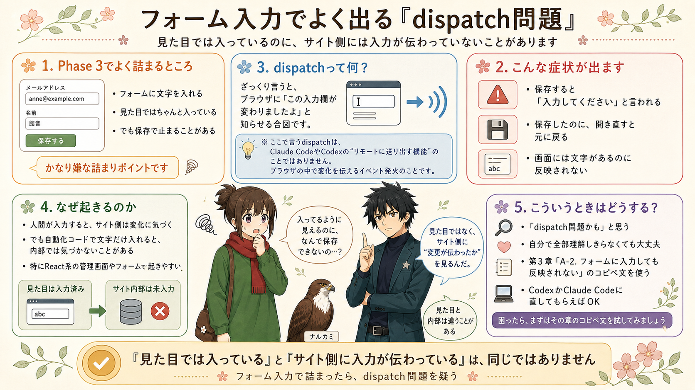
💡 「dispatch」という言葉について
Claude CodeやCodexには「dispatch」という、タスクをリモートで送り出す機能もありますが、それとは別物です。ここで言うdispatchは、ブラウザのJavaScript内部に変更を伝える「イベント発火」の仕組みを指します。
dispatchというのは、
ざっくり言うと、
ブラウザに対して、
「今、この入力欄が変わりましたよ」
と知らせる合図のようなものです。
人間がキーボードで入力すると、
サイト側はその変化に気づきます。
でも自動化コードで文字だけ入れると、
見た目は変わっているのに、
サイト側の内部では気づいていないことがあります。
特にReactなどで作られた管理画面やフォームでは、
これが起きやすいです。
なので、
- 「入力したのに保存されない」
- 「保存ボタンを押すと未入力扱いになる」
- 「画面には文字があるのに、送信結果に反映されない」
こういうときは、
「dispatch問題かも」
と思ってください。
自分で仕組みを理解しきらなくても大丈夫です。
- 第5章の
- 「A-2. フォームに入力しても反映されない」
- にコピペ文を置いています。
そこを使って、
CodexかClaude Codeに直してもらえばOKです。
Claudeの返事がズレたとき
Claudeに聞いても、
たまにズレた答えが返ってくることがあります。
あります。
普通にあります。
- 「いや、そこじゃない」
- 「もうその設定はやった」
- 「そのボタンは画面にない」
- 「さっきと同じことを言っている」
こういうことがあります。
そのときも、すぐ諦めなくて大丈夫です。
こう返してください。
その修正はすでに試しましたが、同じ場所で止まります。
画面上には○○というボタンは表示されていません。
現在のスクリーンショットを添付します。
前提を見直して、別の原因を3つ挙げてください。
そのうえで、最も可能性が高い修正から試したいです。AIとの作業では、
1回の回答を信じ切る必要はありません。
- 違うなら、違う材料を渡す。
- 前提を直す。
- 別案を出させる。
この往復で進めます。
よくある詰まりは、だいたい型があります
詰まりには、よくある型があります。
たとえば、
- ボタンを押しても何も起きない。
- 入力欄に文字は入るのに保存できない。
- ページが切り替わる前に次の処理が走ってしまう。
- ログインを毎回求められる。
- ファイルアップロードで止まる。
- 途中で止まると最初からやり直しになる。
こういうものです。
これは、あなたの能力不足ではありません。
ブラウザ自動化で普通に起きる問題です。
第5章では、この詰まりをパターン辞典としてまとめます。→ 第5章 辞典編へ
なのでPhase 3では、
「あ、これは自分がダメだからではなく、よくある詰まりなんだ」
と思ってください。
そのうえで、
エラー文とスクショをClaudeに渡します。
Phase 3の完了ライン
Phase 3は、
最小版が最後まで動いたら完了です。
ここで言う最小版は、
最初に決めた小さい範囲です。
たとえば、
- ログインして投稿画面まで行ける。
- 音声ファイルを選べる。
- タイトルだけ入力できる。
- 投稿直前の確認画面まで進める。
このくらいでもOKです。
いきなり全自動で投稿完了まで行かなくてもいいです。
まず小さく動いた。
これが大事です。
小さく動けば、次を足せます。
目的：実際に動かして詰まりを見つけ、AIと往復して修正する
やること：実行 → 止まる → エラー文＋スクショをAIに渡す → 直す → 繰り返す
完了ライン：最小版が最後まで通して動いた状態
Phase 4 再開できる設計にする — 途中で止まっても戻れるようにする
目的：壊れても怖くない状態にする（回復設計）
やること：エラー時のブラウザ保持・スキップオプション・ログ保存の3つを入れる
完了ライン：途中で止まっても怖くない状態。「試作品」から「毎日使える道具」へ

最後が、回復設計です。
少し難しく聞こえるかもしれません。
でも、考え方はシンプルです。
自動化は、いつか壊れます。
- サイトの画面が変わる。
- ログインが切れる。
- ネットが遅い。
- アップロードに時間がかかる。
- ファイル名を間違える。
- サービス側でエラーが出る。
こういうことは起きます。
なので、
「絶対に壊れないロボット」
を目指すのはやめます。
代わりに、
「壊れても戻れるロボット」
を目指します。
ここが現実的です。
最初から完璧にしなくていい。でも、戻れるようにはする
たとえば、Voicyへのアップロードが終わったあとに、
Stand.fmで止まったとします。
このとき、
最初から全部やり直しだとつらいです。
Voicyにはもうアップロード済み。
予約投稿も終わっている。
なのに、もう一度最初から実行すると、
二重投稿になるかもしれません。
怖いですよね。
だから、
途中から再開できるようにします。
Voicyはスキップして、Stand.fmから再開する。
サムネイル設定だけもう一度やる。
こういう戻り方ができると、
自動化はかなり使いやすくなります。
回復設計その1 エラーが出てもブラウザを閉じない
まず入れてほしいのは、これです。
エラーが出ても、
ブラウザを閉じない。
なぜなら、
止まった画面を見たいからです。
エラーが出た瞬間にブラウザが閉じると、
何が起きたかわかりません。
なのでClaudeにこう頼みます。
エラーが起きてもブラウザを閉じず、
その場で止まるようにしてください。
画面を確認したあと、
Enterを押したら終了する形にしてください。これだけで、かなり楽になります。
- 止まった画面を見られる。
- スクリーンショットも撮れる。
- 必要なら手で状況を確認できる。
原因を伝えやすくなります。
回復設計その2 途中から再開できるオプションを作る
次に、
途中から再開できるようにします。
たとえば、音声配信の自動化なら、
こういうオプションが考えられます。
python3 upload.py --skip-service-a
python3 upload.py --skip-service-b意味はざっくりこうです。
Voicyが終わっているなら、Voicyを飛ばす。
Stand.fmが終わっているなら、Stand.fmを飛ばす。
こうしておくと、
途中で止まっても最初からやり直さなくて済みます。
Claudeには、こう頼みます。
途中まで完了している場合に備えて、
処理をスキップできるオプションを追加してください。
例：
--skip-service-a
--skip-service-b
すでに完了した処理を二重実行しないようにしたいです。この考え方は、
音声配信以外でも使えます。
請求書なら、
PDF作成済みのものは飛ばす。
SNS投稿なら、
Xだけ終わっている場合はInstagramから再開する。
管理画面入力なら、
基本情報まで終わっている場合は画像登録から再開する。
こんなふうに使えます。
回復設計その3 ログとスクリーンショットを残す
最後に、
記録を残します。
自動化で困るのは、
あとから見たときに、
何が起きたかわからないことです。
- 昨日は動いた。
- 今日は止まった。
- でも、どこで止まったのか覚えていない。
- 画面も閉じてしまった。
- エラー文も消えてしまった。
こうなると、調査が大変です。
なので、
ログとスクリーンショットを残します。
Claudeには、こう頼みます。
各ステップの開始・完了・エラーをログに残してください。
また、エラーが起きたときは、
スクリーンショットを screenshots フォルダに保存してください。
ファイル名には日時とステップ名を入れてください。たとえば、
screenshots/2026-04-28_0830_service_b_upload_error.pngのような形です。
これなら、
あとから見てもわかります。
- いつ。
- どこで。
- 何が起きたのか。
この記録があるだけで、
Claudeへの相談がかなり楽になります。
Phase 4の完了ライン
Phase 4は、
途中で止まっても怖くない状態になったら完了です。
具体的には、
エラー時にブラウザがすぐ閉じない。
スクリーンショットが残る。
ログが残る。
完了済みの処理をスキップできる。
一部だけ再実行できる。
このあたりが入っていれば、かなり使いやすくなります。
ここまで来ると、
自動化は「試作品」から「毎日使える道具」に近づきます。
目的：途中で止まっても戻れる設計にする
やること：エラーでブラウザが閉じない設計、ログ・スクショ保存、完了済みのスキップ、部分再実行
完了ライン：止まっても怖くない状態（スクショ・ログが残り、一部だけ再実行できる）
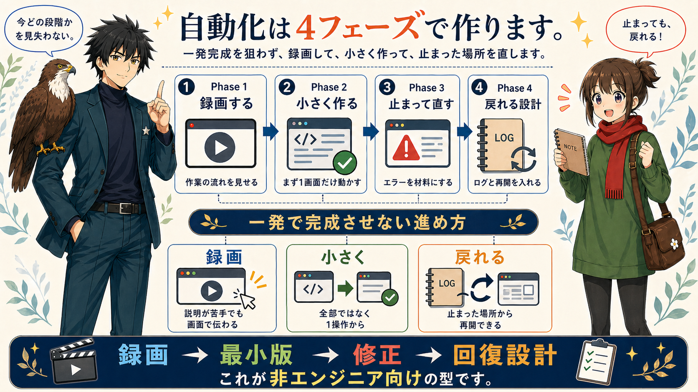
Phase 5 応用編：融通をどこまで持たせるか
ここから先は応用編です。
最初の1個目では、
無理にここまで考えなくて大丈夫です。
ただ、自動化を何回か作っていると、
- 「この場合はスキップしたい」
- 「エラーが出たらやり直したい」
- 「この文章で送っていいかAIに見てほしい」
みたいに、
少しずつ融通を持たせたくなります。
そのときは、
3段階で考えると整理しやすいです。
1. 固定
まずは固定です。
- 決まったボタンを押す。
- 決まった文を入れる。
- 決まった順番で進める。
これは安定します。
ただし、融通はありません。
画面や条件が少し変わると止まりやすいです。
でも、
最初の自動化はこれで十分です。
まずは、
「決まった流れを1回通せる」
を目指してください。
2. 条件分岐
次が条件分岐です。
ここが一番実用的です。
たとえば、
- もし「公開済み」ならスキップする。
- もし「エラー表示」が出たらリトライする。
- もし「項目が空」なら入力する。
- もし「請求書PDF」があればDriveに保存する。
- もし「未入金」なら確認リストに入れる。
- もし「送信済み」ならフォーム送信しない。
このレベルになると、
かなり現場で使える自動化になります。
人間が毎回見ていた小さな判断を、
ルールにして入れていくイメージです。
3. 判断
最後がAI判断です。
たとえば、
- この問い合わせは返信する価値があるか。
- この宿の紹介文は魅力的か。
- この文章で公開してよいか。
- このエラーは致命的か、軽微か。
- このメールは請求書メールか、ただの通知か。
こういう判断は、
AIが得意な場面もあります。
ただし、
AI判断を入れると一気にブレやすくなります。
同じ入力でも、
昨日はOK、
今日はNG、
ということが起きます。
だから、
AI判断は強いけれど、
壊れやすい。
この前提で設計します。
4フェーズを、1つの流れで見る
ここまでの話を、
私が行った実例（音声アップロード自動化）でまとめるとこうです。
Phase 1。（録画する — 自分の作業をAIに見せる）
毎朝やっているアップロード作業を録画します。
- Voicyを開く。
- 音声ファイルを選ぶ。
- タイトルを入れる。
- 説明文を入れる。
- 予約日時を設定する。
- Stand.fmにも同じように入れる。
この流れをClaudeに見せます。
Phase 2。（コード化する — AIにスクリプトを作ってもらう）
Claudeに最小版のコードを作ってもらいます。
- いきなり全部ではなく、まずVoicyの投稿画面まで行く。
- 次にファイルを選ぶ。
- 次にタイトルを入れる。
小さく作ります。
Phase 3。（動かして直す — エラーをAIに渡して修正する）
実際に動かします。
- ログインで止まる。
- ファイルが見つからない。
- ボタンが押せない。
- 予約日時が入らない。
そのたびに、エラー文とスクショをClaudeに渡します。
直して、また動かします。
Phase 4。（再開できる設計にする — 途中で止まっても戻れるようにする）
途中で止まっても戻れるようにします。
- Voicyが終わっているならスキップ。
- Stand.fmだけ再開。
- スクショとログを残す。
- ブラウザを閉じずに止める。
こうして、毎日使える形に近づけます。
いきなり大きな自動化を作らなくていい
ここまで読むと、
「やること多いな」
と思ったかもしれません。
たしかに、全部読むと多く見えます。
でも、最初にやることは1つだけです。
録画です。
自分が毎回やっている作業を、
1回録画する。
そこから始めれば大丈夫です。
最初の自動化は、
小さくていいです。
- メール文の下書きだけ作る。
- ファイル名を整えるだけ。
- 管理画面を開いて、途中まで入力するだけ。
- 画像を決まったサイズにするだけ。
- 投稿画面まで開くだけ。
このくらいでもいいです。
小さくても、
「自分の作業が1つAIとコードで動いた」
という感覚が残ります。
これが大きいです。
一度その感覚ができると、
次に見える景色が変わります。
- 「あれも録画すればいけるかも」
- 「この入力も分ければ作れるかも」
- 「ここで止まっても、スクショを渡せばいいんだ」
こう思えるようになります。
第2章のまとめ
自動化は、一発勝負ではありません。
4つのフェーズで進めます。
Phase 1。
業務を録画して、Claudeに見せる。
Phase 2。
最小版のコードを作ってもらう。
Phase 3。
実際に動かして、止まったところを直す。
Phase 4。
壊れても途中から再開できるようにする。
Phase 5は応用編です。
条件分岐やAI判断を入れて、
より現場向きにしていく段階です。
この順番です。
大事なのは、
最初から完璧を目指さないこと。
小さく作ること。
止まったら、その状態をClaudeに渡すこと。
全部を理解しようとしすぎないこと。
エラーを失敗ではなく、次の材料として扱うこと。
この型さえ持っていれば、
自動化はかなり現実的になります。
次の章では、
実際に詰まったときに使うパターン辞典に入ります。
- ボタンが押せない。
- 入力が反映されない。
- ページ遷移を待てない。
- ログインで止まる。
- ファイルアップロードがうまくいかない。
そういう「よくある詰まり」を、
どうClaudeに伝えれば抜けられるのか。
ここを具体的に見ていきます。
この章に出てくる用語
- フェーズ：自動化を作る工程の単位。Phase 1〜4がある
- 完了ライン：「ここまでできたら次のフェーズへ」の基準
- エラーレポート：詰まったときにAIに渡す情報のセット（エラー文・スクショ・状態の説明）
- 回復設計：途中で止まっても再開できる仕組み（ログ・スキップオプション・ブラウザ保持）
- headless：ブラウザを画面に表示せず裏側で動かすモード。最初は必ず
headless=False（表示あり）で動かす - dispatch問題：自動入力した文字がサイト側に認識されないフォーム入力の詰まり
- Bot検知：サービス側がPlaywrightのブラウザを「ロボット」と判断して、ログインやメール送信をブロックする仕組み
- 2段階認証（2FA）：パスワードに加えてメールやアプリのコードでログインを確認する仕組み。手動ログイン一回で突破できる
- プロファイルフォルダ：ブラウザのログイン状態・Cookie・履歴を保存しているフォルダ。同じフォルダを使うことでログイン済み状態を引き継げる
第3章 マインド編：詰まっても折れない作業ルール
第2章で型を学んだあと、次は詰まったときの具体的な抜け方に進みます。
でもその前に、1つだけ先に伝えておきたいことがあります。
人が自動化ツール作りを諦めるのは、技術の問題じゃありません。
- 「自分には無理かも」
- 「もう疲れた」
- 「向いてないのかな」
この気持ちに勝てるかどうか。
ここが本当の分かれ道です。
正直に言います
自動化ツール作り、ぶっちゃけ大変です。
- 普段の仕事より頭を使います。
- 画面とにらめっこする時間も長いです。
- 動かないときは本当にイライラします。
でも、1個完成させた瞬間に世界が変わります。
毎日30分やっていた作業が、ボタン1つで終わるようになる。
その時間が一生ぶん積み上がっていきます。
その「越えた先」のために、ここから先のマインドの話を読んでください。
マインド① 詰まっている=普通
次の第4章でも詳しく扱いますが、
自動化に必要なのは、コードを書く力よりも、詰まったあとに状況を整理してAIに渡す力です。
詰まらず動いた経験は、ほぼありません。
ペスハム自身、おてつたびのツールを作るとき、
最初の1宿で50回以上AIに質問しました。
音声配信自動化のときも、投稿ボタンや自動起動のところで何度も止まりました。
なので、ここではもう一度だけ言います。
詰まるのは、ふつうです。
「またエラーか...」と思っても、
それは向いてない証拠ではありません。
ただ、次にAIへ渡す材料が出てきただけです。
ここで完全に投げないこと。
それだけで、かなり前に進めると思います。
マインド② 始めた時点で、もう勝ってる
「自動化したい業務がある」と思って、
この教材を買って、
実際に手を動かし始めた人。
これ、全人口の上位5%です。
ほとんどの人は「自動化したい」と思っても、
- 「めんどくさそう」で開かない
- 「コードとか無理」で諦める
- 「お金かかりそう」で逃げる
その3関門を全部突破して、ここまで来ている時点で、
もう大半の人を超えています。
途中で詰まったとしても、最初からやらなかった人より100倍前にいます。
これだけは忘れないでください。
マインド③ 30分ルール

詰まったら、30分で一旦離れます。
これは精神論ではなく、脳科学的な事実です。
- 人間の脳は、悩み続けると視野が狭くなります。
- 同じ思考をループします。
- 新しい角度が見えなくなります。
逆に、一旦離れると：
- シャワーを浴びてる時にひらめく
- 散歩中に答えが降ってくる
- 翌朝、すんなり解ける
ペスハムも、どうしても抜けない問題で長く詰まったことがあります。
解けたのは、いったん離れたあとの朝でした。
「あ、ここを別の角度で見ればいいのか」
と気づいた瞬間、急に前に進むことがあります。
詰まったら、30分で離れる。
これだけ守ってください。
マインド④ 80%でいい
完璧を目指さない。
おてつたびのツール、今でも完璧には動いていません。
施設ページの一部は、最後だけ手動で修正しています。
それでも、手作業10分かかっていた作業が3分ほど、しかも放置でできるようになりました。
完全自動化を目指して頓挫するより、
「9割動く半自動化」を完成させるほうが100倍価値があります。
「ここから先は手動でいい」
そう判断する勇気を持ってください。
最後に：詰まったときの呪文
次の第4章に、技術的な抜け方をまとめてあります。
でもどうしても辛くなったときは、先にこれだけ思い出してください。
> **「詰まってるのは、自分が悪いからじゃない。
> ただ、今そのフェーズにいるだけ。」**
> 「30分詰まったら、離れていい。」
> 「80%動けば、それで勝ち。」
> 「ここまで来た時点で、もう上位5%。」
第4章 解決編：止まったときの抜け方
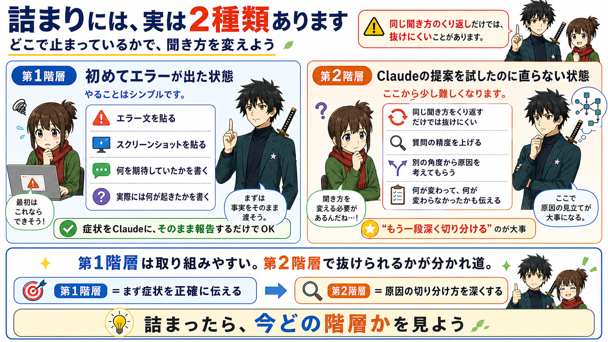
この章でわかること
自動化ツールを作っていると、必ず「詰まる」瞬間が来ます。
- ボタンが押せない。
- エラーが出続ける。
- Claudeに聞いても直らない。
ほとんどの人はここで諦めます。
でも、抜け方には型があります。
この章を読み終わるころには、
「詰まっても自力で抜けられる人」になっています。
ここで必要なのは、コード力よりも粘る力です
序章ではあえて軽く触れましたが、
自動化づくりで本当に差が出るのはここです。
ペスハムはコードが書けません。
でも、必要だったのは
Pythonをスラスラ書く力ではなくて、
エラーが出たあとに、もう一回だけ状況を整理してAIに渡す力でした。
「またダメだった」で閉じるんじゃなくて、
- 「このエラー文を見せよう」
- 「今の画面をスクショしよう」
- 「本来どうなってほしかったかを書こう」
ここまでできると、かなり前に進みます。
もちろん、気合いだけで耐えろという話ではありません。
- 30分詰まったら、いったん閉じていいです。
- 翌朝にもう一回見てもいいです。
- 別のAIに聞いてもいいです。
昨日まったく動かなかったものが、
翌朝にエラー文を貼り直しただけで動くことがあります。
だからこの章では、
ただ「諦めるな」と言うのではなく、
詰まったときに何を残して、
何をAIに渡して、
どの順番で切り分けるかを具体的に渡します。
必ず夜は明ける、みたいな話をしたいわけではないんですけど、
自動化は本当に、抜け方を知っているかどうかで変わります。
大前提：詰まるのは100%起きる
最初に伝えておきます。
詰まらずに完成することは、絶対にありません。
これは初心者に限った話ではありません。
プロのエンジニアも、毎日詰まっています。
だから「自分が詰まっているのは、何かおかしいからだ」と思わないでください。
詰まっているのは、ただ"今そのフェーズにいる"だけです。
詰まりには2階層ある
詰まりには、実は2種類あります。
第1階層は、初めてエラーが出た状態です。
やることはシンプルです。
- エラー文を貼る。
- スクリーンショットを貼る。
- 何を期待していて、実際には何が起きたかを書く。
症状をClaudeにそのまま報告するだけです。
第2階層は、Claudeの提案を試したのに直らない状態です。
ここから少し難しくなります。
同じ聞き方を繰り返すだけでは抜けにくいので、
質問の精度を上げたり、
別の角度から原因を考えてもらったりします。
第1階層は多くの人が取り組みやすいです。
第2階層で抜けられるかが、できる人との分水嶺です。
第1階層の抜け方（基本）
症状をそのままClaudeに渡す
ここは難しく考えなくて大丈夫です。
「何が起きたか」をそのまま伝えるだけ。
✅ 報告テンプレート（コピペOK）
以下のエラーが出ました。
▼ エラー文
[ターミナル（PowerShell）に出ているエラー文をそのままコピペ]
▼ 画面の様子
[スクリーンショットを添付]
▼ 期待していた動作
○○○○ボタンが押されてフォームが送信されるはずだった
▼ 実際の動作
何も起きずに止まっている
修正方法を教えてください。このテンプレートで送るだけで、Claudeはかなり高い確率で正解に近い答えを返してくれます。
🚨 やってはいけない報告
＜悪い例＞
「動きません」
「エラーが出ます」
「うまくいきません」
これは情報がゼロです。
Claudeも超能力者ではないので、これでは答えられません。
第2階層の抜け方（ここが本番）
Claudeの最初の提案を試した。
それでも直らない。
ここでほとんどの人が諦めます。
でも、ここからが本当のスタートです。
抜け方その1：質問の精度を上げる
「何を試した結果、どうなったか」を具体的に伝えます。
✅ 第2階層のテンプレート（コピペOK）
先ほど教えていただいた方法を試しましたが、まだ動きません。
▼ 試したこと
① [何のファイルを開いて]
② [どこをどう変更したか]
③ [どのコマンドを実行したか]
▼ その結果
[新しく出たエラー or 何が起きたか]
[新しいスクリーンショット]
▼ 何が違うのか
前のエラー：○○○○
今のエラー：××××
（変わっていない場合は「同じエラーのままです」と書く）
別のアプローチを試したいです。
他にどんな方法がありますか?ポイントは「やったことを具体的に」と「別のアプローチを依頼する」。
Claudeは前の会話を完璧に覚えているわけではありません。
毎回"初めて聞く相手"のつもりで書くくらいでちょうどいいです。
抜け方その2：角度を変える「3つのリセット技」
同じ方向で粘っても抜けないとき、こう切り替えます。
リセット技① 「全く別のやり方を提案して」
「このアプローチではうまくいかないようです。
全く別のやり方で同じ目的を達成する方法はありますか?
3つくらい候補を出してください。」3つ候補を出させると、Claudeは違う角度から提案してきます。
最初の方法に固執しなくなります。
リセット技② 「一旦そこは飛ばして次へ」
「この部分はあとで手動でやることにします。
次のステップに進める形でコードを修正してください。」完璧を目指さない。
80%動けば、それで業務時間は十分減ります。
残りの20%は手動でいいです。
リセット技③ 「全部捨てて最初からやり直す」
これは最終兵器です。
「このコード、なんか色々おかしい気がする」と感じたら、
ファイルを全部消して、新しい会話で最初から作り直します。
不思議なことに、これが一番速いときがあります。
30分悩むより、5分でゼロから作り直したほうが解決します。
抜け方その3：人間がやる「切り分け」

Claudeに丸投げしても抜けないときは、自分で切り分けします。
切り分けの基本：「最小単位で動かしてみる」
例えば「ログインができない」とき、
いきなり「ログインからフォーム送信まで全部」を動かそうとせず、
① ブラウザを開くだけのコード → 動くか?
② ログインページを開くだけ → 動くか?
③ メールアドレスを入力するだけ → 動くか?
④ パスワードを入力するだけ → 動くか?
⑤ ログインボタンを押すだけ → 動くか?1ステップずつ確認します。
これをClaudeにこう頼みます。
「いきなり全部実行ではなく、
ステップごとに動くか確認できる形にコードを分けてください。
各ステップでブラウザを止めて、
私が目視で確認してから次に進むようにしてください。」抜け方その4：別のAIに聞く（強力）
いま使っているAIで何度試しても抜けないとき、
別のAIに聞くと一発で解決することがあります。
これは、
どちらかが劣っているという話ではありません。
CodexにもClaude Codeにも、
それぞれ得意な見方があります。
Codexで作っていて詰まったなら、
Claude Codeに聞いてみる。
Claude Codeで作っていて詰まったなら、
Codexに聞いてみる。
これがまず一番おすすめです。
どちらもコードやファイルの文脈を扱いやすいので、
ブラウザ自動化の相談相手として相性がいいです。
ただし、
必ずCodexアプリやClaude Codeだけで聞かないといけない、
というわけではありません。
ブラウザで開く普通のChatGPTやClaudeに聞いてもいいです。
この場合、
有料プランに入っていなくても、
相談だけなら十分役に立つことがあります。
「コードを直接直してもらう」というより、
「別の視点で原因を見てもらう」
という使い方です。
ChatGPTは、概念説明や別の発想の提案が得意です。
CodexやClaude Codeの説明でピンとこないときに、
「もっと初心者向けに説明して」
と投げると、理解が進むことがあります。
Geminiは、Google系サービスや最新情報の検索に強い場面があります。
Googleスプレッドシート、メール、Googleドライブなどが絡む場合は、
別角度のヒントが出ることがあります。
Grokは、砕けた言い回しやSNSまわりの最新情報に強い場面があります。
SNS投稿や最近のサービス仕様について、
別の見方がほしいときに使えることがあります。
詰まったら、別のAIに同じ質問を投げる。
これだけで抜け道が見つかることがよくあります。
✅ 別のAIに聞くときの最重要ポイント
コンテキスト（これまでの経緯）をきちんと伝えること。
別のAIは「あなたが何をやっていたか」を知りません。
いきなり「動かないんです」と言っても、役に立つ答えは返ってきません。
🚀 神テクニック：いま使っているAIにコンテキストを書いてもらう
これがこの章で一番強力なテクニックです。
別のAIに引き継ぐ前に、
いま使っているCodexかClaude Codeに、
「今までの経緯を整理した質問文」
を書いてもらいます。
✅ Codex / Claude Codeへの依頼テンプレート
これまでの作業を別のAIに引き継いで相談したいので、
以下の内容を整理した「引き継ぎ用の質問文」を作ってください。
含めてほしい情報：
① これから何をしようとしているか（目的）
② 現在の環境（OS、Pythonバージョン、使っているツール）
③ 作っているファイルの構成
④ どこまで動いているか
⑤ 今詰まっているエラーと、これまで試したこと
⑥ 別のAIに聞きたい質問
別のAIにそのまま貼り付ければ即座に状況を把握できる、
コピペ可能な形式で出してください。すると、CodexやClaude Codeはこんな形のテキストを作ってくれます。
【相談】PlaywrightでStand.fmの投稿ボタンが押せない
▼ やりたいこと
Stand.fmの音声アップロードを自動化中。タイトル・サムネイル・
カテゴリの入力までは完了しているが、最後の「投稿」ボタンが
クリックできない。
▼ 環境
・macOS Sonoma 14.5
・Python 3.11
・Playwright 1.40
・Stand.fmの新規投稿ページを開いている
▼ 試したこと
1. page.get_by_role("button", name="投稿") → 反応なし
2. page.get_by_text("投稿") → 複数マッチでエラー
3. 待機時間を10秒→30秒に延長 → 変化なし
▼ 質問
このボタンを確実にクリックする方法を教えてください。これをそのままChatGPTやGeminiに貼り付ければ、
「いきなり最高品質の答え」が返ってきます。
この技術がなぜ強いか
普通の人は別のAIに聞くとき、こう書きがちです。
＜悪い例＞
「Stand.fmの投稿ボタンが押せません。教えてください」
これだと別のAIは何も答えられません。
質問の精度が低すぎます。
でも、いま一緒に作っているCodexやClaude Codeは、
ここまで何をやったかをかなり知っています。
だから、
自分でゼロから説明文を書くより、
いま使っているAIに「引き継ぎ書」を書かせる
のが強いです。
第2階層を抜けられないときの最終判断
それでもダメなときは、「諦める」ではなく「離れる」です。
✅ 30分詰まったら、一旦離れる
✅ 散歩する、シャワーを浴びる、寝る
✅ 翌日もう一度やるこれは精神論ではありません。
脳科学的に、離れた後のほうが解ける確率が高いです。
ペスハム自身、おてつたびツールでボタンが押せない問題に
かなり長い時間ハマりました。
でも一度離れて、翌朝に画面構造を見直したら、
一気に原因が見えてきたことがあります。
詰まったら、一旦離れる。
これが唯一の正解です。
詰まり対処マップ
【第1階層】症状をテンプレートで報告
↓ ダメなら
【第2階層】質問の精度を上げる
↓ ダメなら
【引き継ぎ書】Claude Codeに今の状況を引き継ぎ書として書かせる
↓
【別AI相談】引き継ぎ書を別のAI（ChatGPTなど）に貼り付けて相談
↓ ダメなら
【リセット技①】別のアプローチを依頼
↓ ダメなら
【リセット技②】一旦そこを飛ばす
↓ ダメなら
【リセット技③】最初からやり直す
↓ ダメなら
【人間の切り分け】最小単位で動かす
↓ ダメなら
【離れる】30分以上詰まったら一旦休む🚨 この章で一番伝えたいこと
詰まりは、スキルが身につく場所です。
詰まらず動いたコードは、何も学びになっていません。
詰まって、調べて、試して、抜けたコードだけが、自分の血肉になります。
だから、詰まったときに「あ、今学んでる時間だ」と思えるようになってください。
それができれば、もうあなたは諦めない人になっています。
この章に出てくる用語
- 第1階層の詰まり：初めてエラーが出た状態。エラー文・スクショ・状況をそのまま渡せば抜けやすい
- 第2階層の詰まり：Claudeの提案を試しても直らない状態。質問の精度を上げたり、別の角度から原因を探る必要がある
- リセット技：Claudeが同じ提案をループしているときに使う打開策（新規チャット・モデル変更・別AIへの乗り換えなど）
- 引き継ぎ書：会話が長くなってClaudeが状況を把握しきれなくなったときに渡す、現状まとめのテンプレート
- エラーレポート：詰まったときにAIに渡す情報のセット（エラー文・スクショ・本来期待した動作の説明）
第5章 辞典編：そのまま貼れるプロンプト辞典
この章の使い方
詰まったときに該当ページを開いて、
Claudeへのコピペ文をそのまま使う。
それだけで90%の問題は解決します。
第2章で出てきたプロンプトも、
ここに改めてまとめておきます。
なので、
- 「録画したあと、何て頼むんだっけ？」
- 「エラーが出たとき、どう伝えるんだっけ？」
- 「途中から再開できるようにしたいとき、何て言えばいいんだっけ？」
となったら、
まずこの章を開いてください。
この章だけ開けば、
だいたいのコピペ文は拾えるようにしておきます。
【復習】第2章で使ったプロンプト早見表
ここは、
自動化づくりの流れでよく使う依頼文です。
Claude CodeでもCodexでも使えます。
本文では「Claudeに渡す」と書いている箇所もありますが、
Codexで進めている人は、
そのままCodexに貼って大丈夫です。
Phase 1 録画した作業を整理してもらう
作業を録画したあと、
最初に貼るプロンプトです。
いきなりコードを書かせるのではなく、
まず作業を分解してもらいます。
この動画は、私が毎日やっている○○の作業です。
まず、この作業を自動化するために、
動画の中で行っている操作をステップごとに整理してください。
そのうえで、PlaywrightのPythonコードで自動化できそうか、
難しそうな箇所があるかも教えてください。もう少し細かく整理してほしいときは、
次の形で頼みます。
この作業を以下の形で整理してください。
1. 作業全体の目的
2. 操作手順
3. 毎回変わる入力
4. 毎回同じ入力
5. ログインが必要な箇所
6. ファイルアップロードが必要な箇所
7. 自動化で詰まりそうな箇所
8. 最初に作るべき最小版ポイントは、
8番目の「最初に作るべき最小版」です。
最初から全部作ろうとせず、
どこまでを1個目のゴールにするかを決めてもらいます。
Phase 2 最小版のコードを作ってもらう
作業の流れが整理できたら、
最小版のコードを作ってもらいます。
では、この作業を自動化するPlaywrightのPythonコードを作ってください。
最初は最小版で構いません。
まずは○○の画面を開き、
ログインして、
投稿画面まで進むところまで作ってください。
ブラウザは表示した状態で動かしてください。
エラーが起きたらスクリーンショットを保存してください。○○のところには、
自分の作業名を入れてください。
たとえば、
- 「Voicyの投稿画面」
- 「予約サイトの管理画面」
- 「問い合わせフォーム」
- 「請求書作成画面」
みたいな感じです。
ログイン情報を.envで扱ってもらう
メールアドレスやパスワードを、
AIのチャットに直接貼らないためのプロンプトです。
ログイン情報は.envから読み込む形にしてください。
実際のメールアドレスやパスワードは私が.envに書きます。.env ファイル自体を作ってもらうときは、
こう頼みます。
この自動化コードと同じフォルダに `.env` ファイルを作ってください。
中身は以下の雛形だけにしてください。
SERVICE_EMAIL=
SERVICE_PASSWORD=
実際のメールアドレスとパスワードは私があとで自分で入力します。うまく読み込めないときは、
この形で聞きます。
.env を作ったのですが、ログイン情報が読み込めていないようです。
確認してほしいことは以下です。
1. .env のファイル名が正しいか
2. .env がコードと同じフォルダにある前提になっているか
3. Pythonコード側で .env を読み込む処理が入っているか
4. SERVICE_EMAIL と SERVICE_PASSWORD の名前がコード側と一致しているか
必要であれば、.env の読み込み部分だけ修正してください。Phase 3 止まった状態を報告する
動かして止まったときは、
「動きません」だけだと足りません。
どの状態から始めて、
何をしようとして、
本来どうなってほしくて、
実際どうなったか。
ここまで渡します。
以下の状態で止まりました。
どの状態から始めたか：
[例：管理画面にログイン済みで、募集一覧画面にいました]
何をしようとしたか：
[例：「新規募集を作成」ボタンを押して、募集作成画面へ移動しようとしました]
本来どうなってほしかったか：
[例：「募集タイトル」の入力欄がある画面に移動してほしかったです]
実際どうなったか：
[例：一覧画面のままで、URLも変わりませんでした]
その時のURL：
[URLを貼る]
エラーメッセージ：
[出ていれば貼る]
スクリーンショット：
[画像を添付]
この状態遷移が失敗しているので、
原因を推測して、該当箇所だけ修正してください。これがかなり大事です。
自動化は、
「クリックが正しいか」ではなく、
「状態が次に進んだか」で見ます。
修正は1か所ずつ頼む
止まるたびに全部作り直すと、
動いていたところまで崩れることがあります。
なので、
基本は詰まった箇所だけ直します。
全体は大きく変えずに、
今回止まった○○の箇所だけ修正してください。○○には、
- 「ログイン」
- 「ファイル選択」
- 「保存ボタン」
- 「予約日時の入力」
- 「フォーム送信」
のように、
今止まっている場所を入れます。
返事がズレたときに、前提を見直してもらう
AIの返事がズレることもあります。
そのときは、
「違います」とだけ返すより、
何が違うのかを渡したほうが直りやすいです。
その修正はすでに試しましたが、同じ場所で止まります。
画面上には○○というボタンは表示されていません。
現在のスクリーンショットを添付します。
前提を見直して、別の原因を3つ挙げてください。
そのうえで、最も可能性が高い修正から試したいです。Phase 4 エラーでブラウザを閉じないようにする
エラーが出た瞬間にブラウザが閉じると、
何が起きたかわかりません。
まずは、
止まった画面を見られるようにします。
エラーが起きてもブラウザを閉じず、
その場で止まるようにしてください。
画面を確認したあと、
Enterを押したら終了する形にしてください。Phase 4 途中から再開できるようにする
途中まで終わっている作業を、
もう一度最初からやるのは危ないです。
二重投稿や二重送信になることがあります。
なので、
スキップできるオプションを作ってもらいます。
途中まで完了している場合に備えて、
処理をスキップできるオプションを追加してください。
例：
--skip-service-a
--skip-service-b
すでに完了した処理を二重実行しないようにしたいです。音声配信以外なら、
オプション名は作業に合わせて変えてもらえば大丈夫です。
たとえば、
--skip-invoice--skip-gmail--skip-form--skip-upload
みたいな形です。
Phase 4 ログとスクリーンショットを残す
あとから原因を見返せるようにするプロンプトです。
各ステップの開始・完了・エラーをログに残してください。
また、エラーが起きたときは、
スクリーンショットを screenshots フォルダに保存してください。
ファイル名には日時とステップ名を入れてください。たとえば、
screenshots/2026-04-28_0830_service_b_upload_error.pngのように残ると、
あとからAIに相談しやすくなります。
【復習】第4章で使ったプロンプト早見表
第4章「詰まったときの抜け方」で出てきた報告テンプレートと、
抜けられないときのリセット技のコピペ文です。
詰まったときに、ここから直接使ってください。
第1階層 症状をそのまま報告する
初めてエラーが出たときの基本テンプレートです。
以下の状態で止まりました。
▼ エラー文
[ターミナル（PowerShell）に出ているエラー文をそのままコピペ]
▼ 画面の様子
[スクリーンショットを添付]
▼ 期待していた動作
○○○○ボタンが押されてフォームが送信されるはずだった
▼ 実際の動作
何も起きずに止まっている
修正方法を教えてください。第2階層 試したことを具体的に報告する
Claudeの提案を試しても直らないときに使います。
先ほど教えていただいた方法を試しましたが、まだ動きません。
▼ 試したこと
① [何のファイルを開いて]
② [どこをどう変更したか]
③ [どのコマンドを実行したか]
▼ その結果
[新しく出たエラー or 何が起きたか]
[新しいスクリーンショット]
▼ 何が違うのか
前のエラー：○○○○
今のエラー：××××
（変わっていない場合は「同じエラーのままです」と書く）
別のアプローチを試したいです。
他にどんな方法がありますか?リセット技① 別のやり方を提案してもらう
「このアプローチではうまくいかないようです。
全く別のやり方で同じ目的を達成する方法はありますか?
3つくらい候補を出してください。」リセット技② 一旦飛ばして次へ進む
「この部分はあとで手動でやることにします。
次のステップに進める形でコードを修正してください。」リセット技③ 最初からやり直す
ファイルを全部消して、新しい会話で最初から作り直します。
30分悩むより5分でゼロから作り直したほうが解決することがあります。
引き継ぎ書依頼テンプレート
同じAIで何度試しても抜けないとき、別のAIへ引き継ぐための文章を作らせます。
これまでの作業を別のAIに引き継いで相談したいので、
以下の内容を整理した「引き継ぎ用の質問文」を作ってください。
含めてほしい情報：
① これから何をしようとしているか（目的）
② 現在の環境（OS、Pythonバージョン、使っているツール）
③ 作っているファイルの構成
④ どこまで動いているか
⑤ 今詰まっているエラーと、これまで試したこと
⑥ 別のAIに聞きたい質問
別のAIにそのまま貼り付ければ即座に状況を把握できる、
コピペ可能な形式で出してください。これをCodexやClaude Codeに頼んで出来上がった文章を、
ChatGPTやGeminiなど別のAIにそのまま貼り付けます。
詰まりパターン全体マップ
A-1 ボタンを押しても何も起きない
A-2 フォームに入力しても反映されない
A-3 「要素が見つかりません」エラー
B. タイミング系
B-1 ページが切り替わる前に次の処理が走ってエラー
B-2 確認ダイアログ・ポップアップで止まる
C. ややこしい構造系
C-1 iframeの中にある要素が操作できない
C-2 普通のセレクタが全部効かない（Shadow DOM）
C-3 クリックできるはずなのにクリックできない
D. 運用系
D-1 ログインを毎回求められる
D-2 ファイルのアップロードがうまくいかない
D-3 途中で止まると最初からやり直しになる
A-1. ボタンを押しても何も起きない

▼ 症状
コードは正常に動いているように見える。
でもボタンが押されていない。エラーも出ない。
▼ 原因をひとことで
JavaScriptで作られたボタンは、ふつうの「クリック」が効かないことがあります。
▼ ✅ Claudeへのコピペ
ボタンをクリックする処理を実行しましたが、
実際にはボタンが押されていません。
▼ 該当箇所
[該当するコードをコピペ]
▼ スクリーンショット
[添付]
以下の3つの方法を順に試してください：
① 普通のクリック → ダメなら
② JavaScriptで強制クリック（element.click()） → ダメなら
③ マウス座標を取得して page.mouse.click(x, y) で直接クリック
それぞれを試すコードを書いて、
動かなかった場合はログを出すようにしてください。▼ 確認方法
ターミナル（PowerShell）に「クリック成功」のログが出ます。
ブラウザ画面が次のステップに進んでいます。
A-2. フォームに入力しても反映されない
▼ 症状
- 入力欄にテキストが見えている。
- でも「保存」ボタンを押すと「入力してください」と言われる。
- 保存しても元に戻る。
▼ 原因をひとことで
Reactで作られたフォームの典型的な罠です。
普通の入力方法だとReactの内部状態が更新されません。
第2章で触れた、
dispatch問題です。
見た目では入力できていても、
サイト側が「入力された」と気づいていない状態です。
▼ ✅ Claudeへのコピペ（dispatch問題を直す依頼）
フォームに入力したテキストが、保存時に反映されません。
ReactのControlled Componentによる問題だと思います。
dispatchEventを使った方式で入力するように修正してください。
具体的には：
① HTMLInputElement.prototypeのvalueセッターを使って値をセット
② input イベントと change イベントを bubbles:true で発火
該当箇所：
[コードをコピペ]▼ Claudeが書いてくれるコード（参考）
await element.evaluate("""(el, v) => {
const setter = Object.getOwnPropertyDescriptor(
HTMLInputElement.prototype, 'value').set;
setter.call(el, v);
el.dispatchEvent(new Event('input', { bubbles: true }));
el.dispatchEvent(new Event('change', { bubbles: true }));
}""", value)細かい意味まで理解しなくて大丈夫です。
ここでは、入力した文字をサイト側にちゃんと気づかせるための修正だと思ってください。
▼ 確認方法
保存ボタンを押した後、画面に入力内容が残ります。
A-3. 「要素が見つかりません」エラー
▼ 症状
TimeoutError: Locator '...' not foundこんなエラーが出て止まります。
▼ 原因をひとことで
指定した方法では、その要素を特定できない状態です。
Reactなどでは「label」と「input」の標準的な紐付けがされていないことが多いです。
▼ ✅ Claudeへのコピペ
要素が見つからずタイムアウトします。
▼ エラー文
[エラーをコピペ]
▼ 探したい要素
[何を探したいか]
例：「業種」というラベルの下のドロップダウン
以下の戦略を順に試して、最初に見つかったものを使うようにしてください：
① get_by_label() で完全一致
② get_by_label() で部分一致
③ get_by_placeholder() で探す
④ XPathで「ラベルテキストの隣のinput」を探す
⑤ DOM上の全ラベル候補を出力（デバッグ用）
それぞれの戦略を試すフォールバック関数として実装してください。▼ 補足
Claudeは複数の戦略を1つの関数にまとめてくれます。
1つで失敗しても次の戦略で探してくれるので、サイトの作りに関係なく動きます。
B-1. ページが切り替わる前に次の処理が走ってエラー
▼ 症状
「次へ」ボタンを押した直後、まだ次の画面が表示されていないのに、
次のステップの処理が走ってエラーになります。
▼ 原因をひとことで
SPA（Single Page Application）は、URLが変わらないままページの中身だけ変わります。
「ページの読み込み完了」を普通に待っても効きません。
▼ ✅ Claudeへのコピペ
「次へ」ボタンを押した後、次の画面が表示される前に
次のステップの処理が走ってしまい、エラーになります。
これはSPA（React）のページ遷移待ちの問題です。
wait_for_load_state ではなく、
「次の画面の代表的なテキスト」が表示されるまで
ポーリングで待つ方式に修正してください。
例：「次のステップに『年齢不問』というタグが出るまで最大15秒待つ」
該当箇所：
[コードをコピペ]▼ 確認方法
画面が切り替わってから次の処理が走るようになります。
タイムアウトエラーが出なくなります。
B-2. 確認ダイアログ・ポップアップで止まる
▼ 症状
「本当に保存しますか?」みたいなポップアップが出て、
そこから先に進めません。
▼ ✅ Claudeへのコピペ
処理中にポップアップやダイアログが出て、
そこで止まってしまいます。
以下の2種類のダイアログに自動でOKを押すようにしてください：
① ブラウザのネイティブダイアログ（alert/confirm）
→ page.on("dialog", ...) で自動でaccept
② Reactで作られたモーダル（画面内に浮かぶウィンドウ）
→ 「OK」「確認」「はい」のいずれかのボタンを探してクリック
該当箇所：
[コードをコピペ]C-1. iframeの中にある要素が操作できない
▼ 症状
画面には確かにボタンが見えています。
でもクリックしようとすると「要素が見つからない」エラーになります。
▼ 原因をひとことで
そのボタンは「ページの中のページ（iframe）」の中にあります。
普通のセレクタは外側のページしか見ません。
▼ ✅ Claudeへのコピペ
画面にはボタンが見えていますが、Playwrightから操作できません。
おそらくiframe内にあると思われます。
以下を行ってください：
① page.frames で全フレームの一覧を出力
② 各フレームのURLをログに表示
③ 各フレーム内で目的のボタンを探す
④ 見つかったフレームでクリックを実行
スクリーンショットも /tmp/iframe_debug.png に保存して、
どのフレームに何があるか見えるようにしてください。▼ 補足
おてつたびも音声配信も、iframeで詰まりました。
「画面に見えてるのに操作できない」と感じたら、まずiframeを疑ってください。
C-2. 普通のセレクタが全部効かない（Shadow DOM）
▼ 症状
Claudeが提案する全ての方法が効きません。
ボタンの存在自体が「見つからない」と言われます。
▼ 原因をひとことで
そのサイトはWeb Components（Shadow DOM）で作られています。
DOMが「外から見えない箱の中」に入っています。
特殊なUI部品を多く使っているサービスで出ることがあります。
▼ ✅ Claudeへのコピペ
通常のセレクタでも get_by_text でも要素が見つかりません。
Shadow DOMで隠されている可能性があります。
JavaScriptを使って、Shadow DOMを再帰的に探索する関数で
要素を特定してクリックしてください。
具体的には elementFromPoint を使って座標から要素を取得し、
shadowRootがあれば再帰的に深掘りする方式です。
それでもダメなら、最終手段として
page.mouse.click(x, y) で座標クリックする方式に切り替えてください。
該当箇所：
[コードをコピペ]▼ 補足
Shadow DOMはClaudeでも詰まることがあります。
そのときは第4章の「別のAIに聞く」を使ってください。
C-3. クリックできるはずなのにクリックできない
▼ 症状
- ボタンは見つかっています。
- クリックも実行されています。
- でも何も起きません。
▼ ✅ Claudeへのコピペ（最終兵器：座標クリック）
ボタンの存在は確認できていますが、通常のクリックが効きません。
最終手段として、座標クリック方式に切り替えてください。
① ボタンの位置（x, y）を getBoundingClientRect() で取得
② page.mouse.click(x, y) で実際のマウス座標をクリック
クリック前にスクショを保存して、
正しい位置をクリックしているか確認できるようにしてください。▼ 補足
これがブラウザ自動化の最後の砦です。
普通のセレクタが全部効かない難サイトでも、座標クリックなら効きます。
D-1. ログインを毎回求められる
▼ 症状
スクリプトを実行するたびにログイン画面から始まります。
時間もかかるし、不安定です。
▼ ✅ Claudeへのコピペ
スクリプトを実行するたびにログインが必要で、毎回時間がかかります。
ログイン後のセッション情報をファイルに保存して、
次回以降はログインをスキップするように修正してください。
▼ 仕組み
① 初回：ログインしてセッション情報を .session_state.json に保存
② 2回目以降：保存したセッションを読み込んでログインをスキップ
③ セッションが切れていたら自動で再ログイン
Playwrightの context.storage_state() を使ってください。▼ 確認方法
2回目の実行から、ログイン画面を経由せずに本処理が始まります。
D-2. ファイルのアップロードがうまくいかない
▼ 症状
「ファイルを選択」ボタンを押すとMacのファイルピッカーが開いてしまい、
スクリプトが止まります。
▼ ✅ Claudeへのコピペ
ファイルアップロードボタンを押すと
OSのファイル選択ダイアログが開いてしまい、
スクリプトが止まります。
以下の2つの方法を試してください：
① page.expect_file_chooser() でダイアログを横取り
→ set_files() でファイルを直接指定
② input[type="file"] を直接探して set_input_files() で指定
（ボタンを経由せず、隠れているinputに直接値をセット）
①が効かなかったら②にフォールバックする形で実装してください。D-3. 途中で止まると最初からやり直しになる
▼ 症状
ステップ7まで進んでエラーで止まったのに、
もう一度実行するとステップ1からやり直しになります。
▼ ✅ Claudeへのコピペ
スクリプトが途中で止まったとき、
最初からではなく途中から再開できるようにしてください。
▼ 仕組み
① コマンドライン引数で「どのステップから始めるか」を指定
例：python upload.py --skip-step1 --skip-step2
② 各ステップの開始時にログを出す
例：「Step 3: フォーム入力を開始します」
③ エラー時にスクリーンショットを保存して、
ブラウザを開いたまま Enter を押すと続きから実行
④ 各ステップ完了時にIDをログ出力
例：「事業者ID: 3004 で作成完了」
このIDを使って次回 --business-id=3004 で再開できる▼ 確認方法
途中エラー時に「python xxx.py --business-id=3004」で続きから実行できます。
E-1. ログインで詰まる（Bot検知・2段階認証がある場合）
▼ 症状
- ログインしようとすると画面が止まる
- 認証メールが届かない（エラーも出ない）
- 2段階認証のコードを入力する画面が出て自動化が進まない
▼ なぜ詰まるのか
Playwrightで動かしているブラウザは、普通の人間が使うブラウザと微妙に違います。
サービス側がその違いを見抜いて「これはロボットだ」と判断し、
メールを送らなかったり、ログインを止めたりします。
エラーメッセージが出ないのが厄介で、詰まっていることに気づきにくいのが特徴です。
「ログインできているはずなのに先に進まない」と感じたら、これを疑ってください。
▼ 解決の考え方
最初の一回だけ、自分の手でログインする。それだけです。
手動でログインしておくと、ブラウザが「ログイン済みの証明書」を保存します。
次にスクリプトを動かすとき、同じブラウザのフォルダを使えば、最初から「ログイン済み」の状態でスタートできます。
自分が一度だけ手動でログイン（2段階認証もここで処理）
↓
ブラウザがログイン情報を保存する
↓
以降のスクリプト実行では保存済みの情報を使う
↓
2段階認証もメール認証も不要で自動で動く▼ ✅ AIへのコピペ（スクリプト作成時）
Playwright で自動化スクリプトを作っています。
対象サービスはBot検知や2段階認証があり、ログインが通りません。
以下の方針でスクリプトを作ってください。
- ブラウザのプロファイルフォルダ（user_data_dir）を指定して起動する
- プロファイルのパス：{プロジェクトフォルダ}/browser_profiles/{サービス名}
- 最初のログインは自分が手動でやるので、
スクリプト内にID・パスワードの入力処理は不要
- 起動時にログイン済みかどうか確認し、
ログインされていなければ警告を出して終了する▼ ✅ AIへのコピペ（手動ログイン用のコマンドを作ってもらう）
Playwrightのプロファイルフォルダは
「{プロジェクトフォルダ}/browser_profiles/{サービス名}」です。
このフォルダを使って、Playwrightのフラグが付いていない
通常のChromeを起動するコマンドを作ってください。▼ 手動ログインの手順（初回のみ）
- AIが作ってくれたコマンドでChromeを起動する（普通のChromeが開く）
- 開いたChromeで対象サービスにアクセスして、通常通りログインする（2段階認証もここで処理）
- ログイン完了後、Chromeを閉じる
- スクリプトを実行する → ログイン済みの状態でスタートする
⚠️ 普段使いのChromeが起動していると失敗します。Chromeをすべて閉じてから実行してください。
▼ 詰まったときのチェックリスト
- 手動ログインとスクリプトで、プロファイルフォルダのパスが同じか
- 「突然ログインできなくなった」→ ログイン証明書の期限切れ。手順①〜④をやり直す
- 普段使いのChromeを閉じてから手動ログインしたか
- 手動ログイン後、Chromeを閉じてからスクリプトを実行したか
🚨 この章で一番伝えたいこと
このパターン辞典のコピペ文、
意味がわからなくて全く問題ありません。
「あ、これ前にも見たエラーだ」
そう思って該当ページを開いて、
コピペ文をそのままClaudeに貼る。
それだけでプロのエンジニアと同じ解決策が手に入ります。
理解より、引ける状態のほうが100倍価値があります。
この章に出てくる用語
- dispatch問題：自動入力した文字がサイト側に認識されないフォーム入力の詰まり。
fill()の代わりにdispatch_event()を使う - セレクター：ウェブページ上の要素（ボタン・入力欄など）を指定する識別子。CSSセレクターやXPathで記述する
- タイムアウト：要素の表示やページ読み込みを一定時間待って諦める仕組み。長すぎると遅く、短すぎるとエラーになる
- ファイルアップロード問題：ブラウザの「ファイルを選択」ダイアログが自動化で扱いにくいケース。
expect_file_chooser()やset_input_files()で対処する
第6章 実例編：実例で見る自動化の完成プロセス
ここまで、やり方の型は全部教えました。
でも「本当に自分でもできるの？」と思いますよね。
この章では、ペスハム自身が実際に作った5つのツールを
作った経緯と詰まったところも含めて全部公開します。
実例① 毎朝6時のAIニュース便 ★ まず最初に作るのにおすすめ
🔴 自動化前の状態
AIの話題は毎日のように変わるけれど、追いきれていなかった。
複数のニュースサイトを毎朝自分で開いて確認するのが面倒で、忙しい日はそのままスキップ。
気づいたら「最近のAI、全然知らない」という状態になっていた。
🔧 作ったもの
毎朝6時に、その日のAIニュースを自動でまとめてGmailに届けるツール。
始まりは一言でした。
毎日朝6時にAI Newsが送られるようにしてほしいこの一言をAIに渡したところ、複数のAI系ニュースサイトから記事を自動取得して、Claudeが日本語で要約し、1通のメールにまとめて送る仕組みを設計してくれました。
「今日すでに送ったなら送らない」という重複防止もついています。
このツールはセットアップガイド付きで配布しています。
→ AIニュース便 セットアップガイド
🔵 制作プロセス
「毎日朝6時にAI Newsが送られるようにしてほしい」と伝える
↓ AIが複数のAI系ニュースサイトのRSSを自動取得する設計を提案
↓ 各記事をClaudeが日本語で要約してメール1通にまとめる仕組みを追加
↓ 「今日すでに送ったなら送らない」重複防止を組み込む
↓ Macが起動したときに自動で動く設定まで完成詰まりポイント
Gmailからメールを送るには、通常のパスワードとは別に「アプリパスワード」という専用のパスワードが必要でした。普通のパスワードで試したら弾かれた → AIに聞いて設定手順を教えてもらい解決。
Macの自動起動設定で時刻がズレていた → 設定ファイルの書き方をAIに直してもらった。
💡 AIニュース便で学んだこと
「毎日やっている情報収集」は自動化との相性が最もいい。最初のツールとして作りやすく、完成して翌朝届いたときの感覚が、2個目へのモチベーションになる。
実例② 毎朝8時のSubstackまとめ便 ─ 実例①の1ステップ上
🔴 自動化前の状態
有益なSubstackニュースレターを複数購読しているが、届くたびに読む時間がない。
未読が溜まって、全部読むのを諦めてしまっていた。
「読んだほうがいい情報」が手元にあるのに使えていないストレスがあった。
🔧 作ったもの
前日にGmailに届いたSubstackのメールをすべて自動で取得し、複数の記事をまとめてClaudeに渡して1本のダイジェストに要約。毎朝8時に「昨日のSubstackまとめ」として届く。
実例③との違いは、複数のメールをまとめてClaudeに渡して1本に要約させるという点です。AIへの指示の渡し方が一段階複雑になっています。
こちらもセットアップガイド付きで配布しています。
→ Substackダイジェスト セットアップガイド
🔵 制作プロセス
「SubstackのメールをAIでまとめてほしい」と伝える
↓ GmailにIMAP接続でアクセスする設計を提案
（GmailをプログラムからアクセスするにはIMAPという方式が必要）
↓ Substackからのメールだけを抽出する条件を追加
↓ メール本文からHTMLの装飾を取り除いてテキストだけ取り出す処理を追加
※ そのままだとゴミが大量に混じって要約の精度が落ちる
↓ 複数記事をまとめてClaudeに渡し、1本のダイジェストを生成
↓ 毎朝8時に自動送信される設定まで完成詰まりポイント
GmailのIMAP設定はデフォルトでオフになっています。設定画面から有効化が必要でした（AIに聞いて手順を教えてもらった）。
メール本文がHTMLで届くため、そのままClaudeに渡すと装飾タグが大量に混じり、要約の精度が下がった。本文テキストだけを取り出す処理をAIに追加してもらって解決。
💡 Substackまとめ便で学んだこと
「Gmailに届くものすべて」が自動化の対象になる。SubstackだけでなくYouTubeの更新通知やニュースレターのまとめにも同じ型が使える。実例①で慣れてから取り組むとスムーズ。
実例③ 音声配信毎日アップロード自動化
🔴 自動化前の状態
毎朝iPhoneで音声を録音して、
PCで以下の作業を手動でやっていました。
1. iPhoneからAirDropでPCに音声を送る
2. Voicyの管理画面を開く
3. 音声をアップロード
4. タイトル・説明文・予約日時を入力
5. 投稿
6. Stand.fmの管理画面を開く
7. 音声を再アップロード
8. タイトル・サムネイル・カテゴリ・説明・予約日時を入力
9. 投稿
10. 投稿できたか確認する
11. 投稿結果を記録する毎日30分かかっていました。
🟢 自動化後の状態
iPhoneでAirDropで音声を送る
↓
（PCが勝手に動き出す）
↓
タイトルだけ入力
↓
あとは全部自動30分 → タイトル入力の10秒だけになりました。
🛠️ 作った手順
Phase 1：録画して分解
VoicyとStand.fmを順番に操作する動画を録画しました。
CodexかClaude Codeに渡して、2サイト分の作業を分解してもらいました。
Phase 2：コード生成
最初はVoicyの投稿画面まで開くところだけ。
次に、音声ファイルを選ぶ。
次に、タイトルと説明文を入れる。
最後に、Stand.fm側も同じ流れで動かす。
こうやって、小さく分けて作りました。
CodexかClaude Codeが書いてくれたスクリプトで、最終的にこの2つを動かせるようにしました。
python upload_音声配信.pyこれでターミナル（PowerShell）から実行すれば、両方アップロードされる状態になりました。
Phase 3：詰まったポイント
第1の壁：Stand.fmの「投稿」ボタンが見つからない
第5章「A-1 ボタンを押しても何も起きない」のコピペ文。
最後の「投稿」ボタンが押せません。
3つの方法を順に試して、最初に動いたもので進めてください。→ 解決。
第2の壁：iPhoneからAirDropで自動起動させたい
Mac特有の問題で詰まりました。
やりたかったことは、
かなりシンプルです。
iPhoneからMacにAirDropで音声ファイルを送る。
そのファイルがDownloadsフォルダに入ったら、
自動でアップロード処理を始める。
つまり、
「音声ファイルが届いたら、自動で起動するようにして」
とClaude Codeに頼みました。
そこでClaude Codeが最初に選んだ方法が、
launchdでした。
launchdは、
macOSに最初から入っている仕組みで、
指定したタイミングや条件で処理を動かすためのものです。
ざっくり言うと、
Macの裏側で自動実行してくれる係です。
なので、
一見よさそうに見えました。
でも、動きませんでした。
第4章の「別のAIに聞く」を試しました。
Claude Codeに引き継ぎ書を書いてもらってChatGPTに投げました。
返ってきた答え：
> 「launchdから起動した bash には Downloadsフォルダへのアクセス権がない（macOSのTCC）」
これはAIでも気づきにくいmacOS固有の罠でした。
別のAIに聞いたから抜けられた典型例です。
解決策：launchdではなく、Homebrewのfswatchを使ってTerminalから常駐監視。
Phase 4：エラー回復＋途中再開
「Voicyまでは終わってるから、Stand.fmから再開したい」みたいな状況があります。
第5章のコピペ文：
--skip-service-a というオプションを追加してください。
このオプション付きで実行すると、Voicyをスキップして
Stand.fmから実行されるようにしてください。→ 完成。
💡 音声配信編で学んだこと
毎日の投稿作業は、録画して分解するとコード化しやすいですね。
macOS特有の問題は、別のAI（ChatGPT）に聞いたほうが早いこともありました。
.command やフォルダ監視まで作ると、毎日の起動操作もかなり楽になります。
実例④ Opal音声原稿 → note自動投稿
🔴 自動化前の状態
Fujinさんのブレイン教材を購入し、Opalのテンプレートと音声ファイルを元にnote記事を作る流れがすでにあった。
Opalで原稿が完成するとZIPでダウンロードできる状態になる。しかしそこからnoteに投稿する作業が毎回面倒だった。
- noteを開いてタイトルを貼る
- 本文を貼る
- サムネイル画像を作ってアップロードする
- 見出しの書式を整える
特にサムネイル作成は手間がかかるため、省略してしまうことも多かった。
また、ChatGPT GPT Image 2が出てから、Opal内の画像生成よりChatGPTのほうがサムネイルの精度が高いと感じ、そちらで作るようになった。しかしその作業も手動で毎回行っていた。
🔧 作ったもの
ZIPをダウンロードしてスクリプトを1回実行するだけで、2つが自動化される。
- サムネイル生成：noteのタイトルを、自分専用のChatGPT GPTs（note用サムネイル生成GPT）に渡して、サムネイルを自動生成・ダウンロード
- note下書き入力：Opalの本文をnoteのフォーマットに合わせて自動入力し、サムネイルをはめ込んで下書き保存
🔵 制作プロセス
Step 1：ZIPを解凍してタイトルと本文を取り出す
Step 2：ブラウザで自動的にChatGPTを開き、
自分のGPTs（note用サムネイル生成）にタイトルを渡す
→ 生成された画像を自動でダウンロード
Step 3：ブラウザで自動的にnote.comを開き、
新規記事画面にタイトル・本文・サムネイルを流し込む
→ 下書き保存詰まりポイント
① noteのエディタに文字が入らない
noteの入力欄は、通常の「文字を打つ」操作では認識されないタイプだった。HTMLとしてクリップボード経由で貼り付ける方法に変えることで解決。第5章の「dispatch問題」と同じ現象です。
② 記事末尾のハッシュタグが大きな見出しになってしまう
noteでは # テキスト と書くと大きな見出しとして表示される。Opalの原稿にはSNS用のハッシュタグが末尾に入っているため、そのまま貼ると記事の最後が全部でかい見出しになってしまった。
→「1行のすべての単語が#で始まるならSNSタグ、そうでなければ見出し」という判定を入れて解決。
③ 自分が作ったGPTsが編集者画面で開いてしまう
自分が作ったGPTsはオーナーとして開くため、チャット画面ではなく編集画面が先に表示されることがあった。チャット用のURLに直接移動する形に変えて安定した。
💡 Opal→note自動投稿で学んだこと
「他の教材で作った半自動の流れ」をさらに自動化するのもれっきとした活用法。すべてゼロから作る必要はなく、「ここだけ面倒」という部分だけをAIに任せる発想が使いやすい。
実例⑤ おてつたびページ自動作成ツール
🔴 自動化前の状態
ペスハムは「おてつたび」というサービスのエリア営業をやっていました。
新しい宿が見つかったら、管理画面に募集ページを作成する必要がありました。
入力項目がとにかく多い。
・法人名・施設名
・業種・業界・連絡先・住所
・担当者の名前（漢字+ひらがな）
・募集タイトル・背景文・特典文
・お手伝い内容のタグ選択（数十個）
・歓迎条件のドロップダウン（10個以上）
・服装・身だしなみのルール
・シフト例（時間帯×複数）
・施設の見出し・紹介文・写真これを全部入力すると、1宿あたり30分以上かかっていました。
それを月に何十宿も、営業後の時間にやるのです。
完全に時間の墓場でした。
実際の管理画面はこんな感じです。

- 入力欄が延々と続いていきます。
- これが何ページにもわたって続きます。
- 1宿ぶんやり終わるまで、ずっとマウスを動かし続ける作業です。
施設ページのほうも別画面で作る必要があります。

ここに見出し・紹介文・写真を入れて、また保存。
このサイクルが宿の数だけ繰り返されました。
🟢 自動化後の状態
1. ターミナル（PowerShell）で python new_inn.py と打つ
2. 質問に答える（5分）
3. python main.py を実行
4. ブラウザが勝手に開いて全項目を自動入力
5. 30分後、完成手作業で10分前後かかっていた作業が、3分ほどで、しかも放置でできるようになりました。
🛠️ 作った手順（4フェーズに沿って）
Phase 1：業務を録画して分解する
最初にやったのは、自分の作業の画面録画でした。
「新しい宿の募集ページを作る」作業を、
最初から最後まで全部録画しました。
14分の動画になりました。
これをClaudeに渡して、こう伝えました。
この動画は、おてつたびの管理画面で
新しい宿の募集ページを作成する作業です。
これを自動化するPlaywrightのPythonコードを作ってください。Claudeは動画を分析して、こう返してきました。
動画から以下の作業フローを確認しました：
① おてつたび管理画面にログイン
② 事業者を新規作成
③ 募集ページのウィザード（7ステップ）
④ フル編集フォームの入力
⑤ 施設ページの作成ここで初めて、自分の作業が5つの工程に分解されました。
頭の中にあった作業が、地図になった瞬間です。
Phase 2：Claudeにコードを生成させる
「そのまま作ってください」と頼んだだけです。
Claudeが以下のファイルを作ってくれました。
main.py ← メインの実行スクリプト
new_inn.py ← 宿情報を入力する対話ウィザード
src/admin_automation.py ← 管理画面の自動操作
config/template.json ← 宿の情報を保存するファイル
.env ← ログイン情報ここまで、ペスハムは1行もコードを書いていません。
Phase 3：動かしてみる→詰まる→直す
実行してみました。
第1の壁：「業種」のドロップダウンが選べない
エラー：
TimeoutError: get_by_label("業種") not found第5章のパターン辞典「A-3 要素が見つかりません」のコピペ文を使いました。
業種のドロップダウンが見つかりません。
複数の戦略を順に試して、見つかったものを使うように修正してください。→ Claudeが5つの戦略を試すコードに書き直し → 解決。
第2の壁：フォームに入力したのに保存されない
これがいわゆるdispatch問題です。
第5章「A-2 フォームに入力しても反映されない」のコピペ文を使いました。
フォームに入力した内容が保存されません。
ReactのControlled Componentの問題だと思うので、
dispatchEventを使った方式に修正してください。→ 解決。
第3の壁：「次へ」ボタンを押しても次のステップの内容が出ていない
これがSPAの遷移待ち問題でした。
[1/7]の次に「次へ」を押した直後、
[2/7]の内容がまだ表示されてないのに次の処理が走ります。
「次のステップに『年齢不問』というタグが出るまで」
ポーリングで待つ方式に修正してください。→ 解決。
第4の壁：環境・雰囲気のドロップダウンが保存時に元に戻る
dispatch問題の応用版でした。
ドロップダウンの選択が保存時に消えます。
selectのdispatchEventも明示的に発火させてください。→ 解決。
Phase 4：エラーで止まっても再開できる設計
何宿も使い回すうちに気づきました。
毎回どこかで止まるのです。
毎回最初からやり直していたら自動化の意味がありません。
そこで第5章「D-3 途中で止まると最初からやり直しになる」のコピペ文を使いました。
スクリプトが途中で止まったときに、
最初からではなく途中から再開できるようにしてください。
事業者IDをコマンドライン引数で渡せるようにして、
事業者作成をスキップして募集ページ作成から始められるようにしてください。→ 完成。
python main.py config/旅館.json 3004これで途中再開できるようになりました。
💡 おてつたび編で学んだこと
コードを書けなくても、業務分解→Claude→詰まったらパターン辞典、で完成します。
Claudeに50回以上質問しました。
全部第5章のコピペ文で解決しました。
5つの実例から見える「型」
実例①〜⑤、やったことはそれぞれ全く違います。
でも進め方は完全に同じでした。
Phase 1：録画 → CodexかClaude Codeに分析させる
Phase 2：コードを生成させる
Phase 3：動かす → 詰まる → パターン辞典 or 別のAI
Phase 4：途中再開・回復設計を入れる業務が違っても、
サイトが違っても、
型は同じです。
これが第2章で言った「4フェーズの型」の意味です。
あなたが次にやること
ここまで読んだら、もう型は身についています。
1. 自分が毎日やっている業務を1つ選ぶ
2. その業務を画面録画する
3. Claudeに渡して「自動化して」と言う
4. 動かしてみて、詰まったら第5章を引く
5. 抜けないときは第4章を見る
6. 諦めそうになったら第3章を読むここまで進めると、自分の業務を自動化する道筋がかなり見えやすくなります。
非エンジニアのペスハムでも、AIに聞きながら少しずつ形にできました。
同じように小さく進めれば、到達しやすくなります。
この章に出てくる用語
- 実例：実際に動いている自動化ツールの作例。詰まった箇所や解決策も含めて公開している
- おてつたび：ペスハムが営業で使っていた農泊マッチングサービス。管理画面への募集ページ作成を自動化した
- 音声配信：Voicyなどへの音声コンテンツ投稿作業。アップロード・サムネイル設定・公開まで自動化した
- end-to-end：最初から最後まで一気に通して動く自動化の形。完成度が上がるほどend-to-endに近づく
- RSS：ニュースサイトが更新情報を配信する仕組み。プログラムから新着記事を自動取得するために使う
- IMAP：Gmailなどのメールに外部からアクセスする方式。設定でオンにする必要がある
- GPTs：ChatGPTの中に作れる専用AIアシスタント。ペスハムはnoteのサムネイル生成用のGPTsを自作して使っている
- Opal：音声・漫画コンテンツを生成するAIツール。生成物をZIPでダウンロードできる
FAQ 用語・よくある質問
教材を読み進めながら、多くの人が引っかかりそうな質問を先回りして集めました。
気になるところだけ拾い読みしてOKです。
💰 お金・コスト編
Q. 月額いくらかかりますか?
A. まず必要なのは、ChatGPTかClaudeの有料プランです。
目安は月20ドル前後（約3,000円）です。
✅ ChatGPTまたはClaudeの有料プラン：月20ドル前後
✅ Python・Playwright：無料
✅ デスクトップアプリ：無料
✅ コード実行・修正機能：有料プラン側で使うChatGPT側で進めるならCodex。
Claude側で進めるならClaude Code。
この対応関係で考えるとわかりやすいです。
毎日30分の手作業が減る可能性があると考えれば、検討しやすい投資だと思います。
- 1ヶ月で約15時間。
- ただし、月額プランとは別にAPI利用料や従量課金が発生する場合があります。
- 料金画面、利用上限、予算上限の設定は最初に確認してください。
- いきなり長時間・大量の処理を回さず、小さな作業から試すのが安全です。
Q. 無料プランで試せませんか?
A. 試すこと自体はできますが、自動化ツール作りには不向きです。
無料プランだと：
- コード作成・修正の利用回数が少なくすぐ制限される
- 長い会話が続けられない
- ツール完成前に毎回打ち切られる
最低でも有料プランは必要と思ってください。
💻 スキル・前提条件編
Q. 本当にプログラミング知識ゼロでも大丈夫ですか?
A. 大丈夫です。
ペスハム自身、Pythonの文法は今も知りません。
「コピペできる」「AIに状況を伝えられる」だけで完成します。
ただし、「触ったことがある」程度のITリテラシーは必要です：
- Macでアプリをインストールしたことがある
- Webサービスのアカウントを作ったことがある
- ファイルやフォルダを操作できる
これくらいできれば問題なしです。
Q. Macじゃなくても大丈夫ですか? Windowsでもできますか?
A. Windowsでも可能です。
ただし、この教材はMacでの実例が中心です。
Windowsでも同じ考え方で進められるケースはあります。
ただ、環境構築、録画方法、ターミナル（PowerShell）操作、ファイルパス、ブラウザの起動方法が変わります。
特に、本文中に出てくるHomebrewの手順はMac向けです。
Windowsではそのまま動かないことがあります。
Windowsユーザーは、まずCodexかClaude Codeにこう聞いてください。
私はWindowsを使っています。
教材ではMacの手順で書かれていますが、
Windowsで同じことをやる場合の手順を教えてください。
[該当の章のスクショや内容]これで多くの手順はWindows向けに書き換えられます。
ただし、PCの設定や権限、インストール済みソフトの違いで、
それでも詰まる場合があります。
Windows編は今後補足予定です。
現時点では、Macの画面と完全に同じにはならない前提で進めてください。
🔧 技術編
Q. どんな業務が自動化できますか?
A. 「ブラウザでやっている繰り返し作業」は、かなりの部分を自動化候補にできます。
✅ できる例：
- 投稿サイトへのアップロード（Voicy、note、SNS等。ただし各サービスの規約内）
- 管理画面へのフォーム入力
- データの転記作業
- 複数サイトをまたぐ同じ操作
- 自分のアカウント内のデータ取得
- 自分が管理しているデータの整理
- 公式APIで許可されている範囲の情報取得
- 利用規約で許されている範囲のデータ取得
他人の投稿、プロフィール、商品情報などを大量に集める目的では使わないでください。
この教材で扱うのは、まず自分の少量の定型作業を楽にするための自動化です。
❌ できない例：
- スマホアプリ専用の操作
- 物理的な作業（紙の書類）
- ログイン時に毎回SMS認証が必要なサイト（一部対応可）
Q. パスワードをAIに教えるのは怖いです
A. 教える必要はありません。
教材ではパスワードを .env というファイルに自分で書きます。
AIには、そのファイルの中身を直接渡さずにコードだけ書いてもらいます。
「.envファイルからパスワードを読み込む」という汎用コードを書くだけなので、
AIはあなたの実際のパスワードを知らないまま自動化が完成します。
.env の作り方で詰まる人は多いので、
第2章の「.env ファイルの作り方」を見ながら進めてください。
ファイル名が .env.txt になっていないか、同じフォルダにあるかが特に大事です。
あわせて、.env はGitHubに上げないでください。
Codex、Claude Code、ChatGPTのチャット欄にも貼らないでください。
公開リポジトリに上げたり、チャットに貼ってしまったりした場合は、
そのパスワードやAPIキーを変更してください。
APIキーなら、古いキーを無効化して新しいキーを作ります。
Q. サイトの利用規約違反になりませんか?
A. ケースバイケースです。
サービスごとに規約が違います。
自分のアカウントで、自分の作業を効率化する場合でも、
規約で禁止されていればNGになり得ます。
特に、次のような文言があるサービスでは注意してください。
- 自動アクセス禁止
- bot禁止
- データ取得の禁止
- 大量送信禁止
- 投稿操作やDM送信の自動化禁止
- CAPTCHA回避禁止
- 公式API以外からのアクセス禁止
また、他人のアカウントに入る、認証を突破する、許可されていないデータにアクセスする行為は、
不正アクセス禁止法の観点でも問題になり得ます。
現実的な線引きとしては、
まずは自分のアカウント内の少量の定型作業から始めてください。
大量取得、大量送信、投稿やDMの完全自動化は慎重に扱います。
公式APIや公式連携が用意されているサービスなら、
ブラウザを無理に操作するより、公式APIや公式連携を優先してください。
不安なときは、各サービスの利用規約を確認し、
必要ならサービス運営元や社内の管理者に確認してください。
Q. CAPTCHAが出るサイトも自動化できますか?

A. ログインとCAPTCHAは、人間が対応する前提にしてください。
CAPTCHAとは、
「私はロボットではありません」にチェックを入れたり、
信号機や横断歩道の画像を選んだりする認証のことです。
これは、サイト側が自動操作を見分けるために置いているものです。
自動突破しようとしないでください。
CAPTCHA回避サービスや突破ツールも使わないでください。
おすすめは、
ログインとCAPTCHAは人間、ログイン後の定型作業は自動化
という分担です。
たとえばログイン時にCAPTCHAが出たら、
そこは自分で手動突破します。
そのあとに行うアップロード、入力、投稿前の保存、管理画面への転記などは、
CAPTCHAが出ないことも多いです。
その範囲だけを自動化するほうが、現実的で安全です。
Q. サイトのデザインが変わったら壊れますか?
A. 壊れます。
これは自動化ツールの宿命です。
サイト側がデザインを変えると、ボタンの位置や名前が変わって動かなくなります。
ただし、修正は最初の作成時より圧倒的に速いです。
CodexかClaude Codeに「動かなくなった」と伝えるだけで、最初の作成時よりかなり早く直せます。
🚨 困ったとき編
Q. 教材の通りに進めたのに、画面が違います
A. スクショを撮ってClaudeに聞いてください。
これがこの教材の最重要ルールです。
（第0章の「詰まったとき」を参照）
Q. エラーが出ました
A. エラー文をそのままClaudeに貼り付けてください。
第5章のパターン辞典で、多くのエラーは整理しやすくなります。
辞典に載っていないエラーでも、CodexやClaude Codeに相談すると解決の糸口が見つかることがあります。
Q. どうしても詰まった場合は相談できますか?
A. どうしても詰まった場合は、購入者向け公式LINEで相談できます。
公式LINE：
https://lin.ee/wzvCa0v
購入者が増えた場合は、Discordでのアフターサポートも検討しています。
ただし、個別環境すべてを完全に代行したり、
必ず動くところまで保証したりするものではありません。
相談するときは、次の情報を添えてください。
- エラー文
- スクショ
- OS（MacかWindowsか）
- 使っているツール（CodexかClaude Codeか）
- どこまでできたか
- どの章・どの手順で止まったか
この情報があると、状況をかなり切り分けやすくなります。
Q. ツールが完成した後、メンテはどれくらい必要ですか?
A. サイト側の変更がなければ、しばらくそのまま使えることもあります。
ただし、メンテナンスが完全にゼロになるとは限りません。
サイト側がデザインやボタン名、ログイン方式、認証方法を変えると、
修正が必要になることがあります。
頻度はサービスによってかなり違います。
数ヶ月そのまま動くこともあれば、短期間で修正が必要になることもあります。
修正時間も、軽いものなら短時間で済む場合がありますが、
初心者の場合は数時間から数日かかることもあります。
そのため、完成後もエラー文、スクショ、どこで止まったかを残しておくと、
CodexやClaude Codeに相談しやすくなります。
💼 仕事・キャリア編
Q. これで仕事を取られないですか?
A. すぐに仕事がなくなる、というより、
自動化を使える人の価値が上がりやすい時代だと考えています。
会社員なら、自分の業務を早く終わらせたり、
ミスを減らしたりする選択肢が増えます。
フリーランスなら、対応できる作業範囲を広げるきっかけになります。
ただし、評価や売上が必ず上がると保証するものではありません。
業務内容、職場、顧客、提案の仕方によって変わります。
「自動化スキル」は、これから学ぶ価値が高いスキルの1つだと思っています。
Q. 会社のサイトでも使っていいですか?
A. 会社の規定とサイトの利用規約に従ってください。
自分の業務効率化でも、会社の規定、情報セキュリティ方針、利用しているサービスの規約に従う必要があります。
機密情報や顧客情報を扱う場合は、事前に上長や管理部門に相談してください。
Q. これを使って副業はできますか?
A. 可能性はありますが、すぐに収益化できると考えすぎないほうが安全です。
業務自動化の相談ニーズはあります。
ただし、他人の業務を代行するには、
ヒアリング、要件整理、規約確認、セキュリティ、納品後の保守まで必要になります。
自分用の自動化を1個作れた段階は、
副業の入口に立つための練習としては有効です。
いきなり有償提供を考えるより、
まずは自分の作業や身近な人の許可を得た作業で経験を積み、
できること・できないこと・保守にかかる時間を把握してから考えるのが現実的です。
最後の質問
Q. 始めるベストなタイミングはいつですか?
A. 今です。
1ヶ月後の自分は、自動化済みの自分か、まだ手作業している自分か。
その差は、今日始めたか始めなかったかだけです。
迷ったら、まず第0章を開いてください。
環境によっては数日かかることもありますが、まずは第0章から進めれば準備に近づきます。
おわりに
時間とお金、両方に余裕がある状態。
これがペスハムが目指している生き方です。
固定費を削って、自動化で時間を削って、
自分にしかできないことに集中する。
この教材で、あなたの「時間側」が動き出すなら、
ペスハムは本当に嬉しいです。
ペスハム自身は、いま車中泊をしながら、
長野県を旅するように働いています。
車を運転して移動しながら、
その裏でClaude CodeやCodexを動かし続ける。
移動している間に、
AIがコードを書いたり、
エラーを直したり、
次の作業を進めてくれている。
こういう働き方も、普通にありだと思っています。
ずっと同じ机に座っていなくてもいい。
場所を変えると、かなりリフレッシュできます。
車には大容量のモバイルバッテリーを積んでいます。
それで充電しながら、
PCをかなりしっかり使えます。
もちろん、誰にでも車中泊を勧めたいわけではありません。
でも、
「働く場所を少し自由にする」
「AIに任せられるところは任せる」
「自分は移動しながら、考える時間を増やす」
こういう選択肢があることは、
知っておいてもいいんじゃないかなと思います。
この教材で扱った自動化は、
そのための土台でもあります。
もし、こういう働き方や、
AIを使って自分の時間を増やす生き方に興味があれば、
メルマガでも発信しています。
無料で登録できます。
👉 https://metamake0601.systeme.io/aa3f000b
それでは、いってらっしゃい。
著：ペスハム